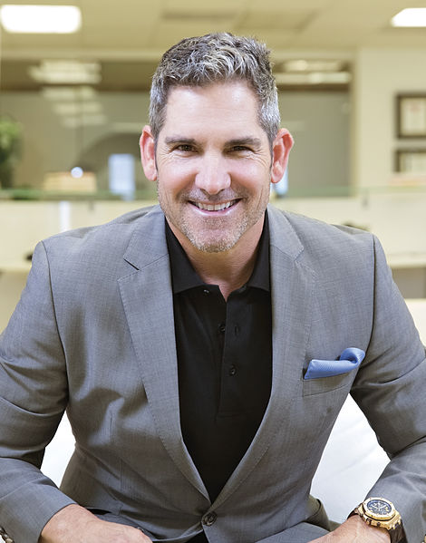

Короткий опис
Представьте, каждая область вашей жизни выходит на уровень в 10 раз больше.
Ваш доход вырастает в 10 раз, ваша ценность на рынке возрастает в 10 раз.
Вы в наилучшей физической форме.
У вас есть достаточно времени для отдыха и развлечений с семьей на уровне в 10 раз больше. Невозможно?
Про автора

Грант Кордон
(рік народження - 1958)
Книги Гранта Кардона бестселлеры New York Times. Грант написал 8 книг, 4 из них в списке бестселлеров. В их числе книги «Продай или продадут тебе», «Если ты не первый-ты последний». Целевая аудитория книг Гранта — это продавцы, бизнесмены и те, кто ищет мотивацию для жизни и достижения целей, для мотивации его книга «Правило в 10 раз больше».
Зміст
1. Вступление
2. Глава 1. Что такое правило «в 10 раз больше»?
3. Глава 2. Почему необходимо правило «в 10 раз больше»
4. Глава 3. Что такое успех?
5. Успех важен
6. Глава 4 . Успех — это ваш долг
7. Прекратите себя обманывать
8. Глава 5. Нет недостатка успеха
9. Глава 6. Будьте готовы брать контроль надо всем
10. Глава 7. Четыре уровня действий
11. Первый уровень действий
12. Второй уровень действий
13. Третий уровень действий
14. Четвёртый уровень: масштабные действия
15. Глава 8. Посредственность — залог неудачи
16. Глава 9. Цели в стиле «в 10 раз больше»
17. Глава 10. Конкуренция — для слабаков
18. Глава 11. Как вырваться из среднего класса
19. Средний класс и его доход
20. Глава 12. Быть одержимым — дар, а не болезнь
...
63. Глава 23. Как претворить в жизнь правило «в 10 раз больше»
64. Глоссарий
65. Заметки
Вступление
Скорее всего, вы взяли эту книгу в руки и подумали: «А что же на самом деле такое правило “в 10 раз больше”? И чем оно мне поможет?»
Правило «в 10 раз больше» — это Святой Грааль для тех, кто жаждет успеха. Серьёзно, если и есть какое-то сокровище, то вот оно — перед вами! Этот принцип настроит вас на верный уровень мышления и действий — уровень, который будет залогом успеха и сам по себе послужит гарантией того, что вы будете действовать с подобным размахом на протяжении всей карьеры и всей жизни. Это правило и эта книга даже помогут вам рассеять страхи, поднять ваш уровень мужества и веру в себя, избавиться от привычки откладывать на потом, от неуверенности и, наконец, придаст вам чувство целеустремлённости, которое вернёт искру в вашу жизнь, ваши цели и мечты.
Правило «в 10 раз больше» и есть тот самый важный принцип, которым победители пользуются в тех областях своей жизни, в которых они процветают. Какой бы ни была ваша мечта и как бы вы ни определяли для себя успех, эта книга поможет вам достичь его с уверенностью при любой экономике. Первое, что нужно сделать, — это настроить своё мышление на десятикратный[1] уровень и расширить ваши действия до того же масштаба. Я расскажу вам о том, как «десятикратные» действия и мышление в стиле «в 10 раз больше» сделают вашу жизнь интереснее и веселее и почему у вас появится больше времени. Всю свою жизнь я изучал секреты успеха, и я верю в то, что именно это правило — это тот инструмент, которым осознанно пользуются все успешные люди, чтобы создать ту жизнь, которую они хотят.
Эта книга научит вас, как ставить верные для себя цели, точно оценивать необходимые усилия, решать, как подходить к своим проектам с верной точки зрения, и затем определять точное количество нужных действий. Вы узнаете, почему успех неизбежен, если действовать в рамках правила «в 10 раз больше», и, наконец, вы поймёте ту единственную причину, по которой большинство людей так и не добивается успеха. Вы впервые обнаружите для себя ту людскую ошибку при постановке целей, которая сама по себе сделает любой успех в достижении этих целей невозможным. А также вы научитесь точно рассчитывать усилия, необходимые для достижения любой цели — большой или маленькой. В завершение я расскажу вам, как привить себе привычку и воспитать в себе дисциплину действовать на уровне «в 10 раз больше». Поверьте мне: когда вы усвоите эту привычку, то успех не просто будет обеспечен — он будет нескончаемо порождать новые успехи и приводить к постоянным и — честное слово! — неизбежным триумфам.
Правило «в 10 раз больше» — это привычка и самодисциплина, а не результат образования и не дар природы, не талант и не везение. Для него не нужны особые черты характера, и каждый, кто захочет, сможет воспользоваться этим принципом. Это правило не стоит ничего — зато оно принесет вам всё, о чём вы только мечтали. Именно это и есть верный подход к постановке и достижению любых целей для людей или организаций. Я расскажу вам, как превратить это правило в образ жизни и единственный возможный подход к проектам. Правило «в 10 раз больше» позволит вам подняться над коллегами и конкурентами в своей сфере, и люди будут смотреть на вас почти как на полубога и сверхъестественного человека, когда увидят, как вы действуете и насколько вы привержены успеху. Они поймут, что вам стоит подражать, и не только в рабочих достижениях, но и в том, как извлечь из жизни всё возможное.
Правило «в 10 раз больше» упрощает и рассекречивает понятие успеха и объясняет, что требуется, чтобы быть успешным. Моя самая серьёзная личная ошибка заключалась в том, что я ставил планку задач недостаточно высоко, и это касается и карьеры, и личных целей. Ведь для великолепного брака не требуется больше усилий, чем для просто хорошего, точно так же как требуется одинаковое количество усилий, чтобы заработать 10 тысяч долларов и 10 миллионов. Кажется нелепым? Да нет, и вы увидите почему, когда сами начнёте действовать на уровне «в 10 раз больше». Ваши цели изменятся, а ваши действия наконец-то начнут отражать, кто вы есть на самом деле и на что вы действительно способны. Вы начнёте действовать, будете продолжать действовать снова и снова и добьётесь того, чего хотели, — вне зависимости от ситуаций и условий; с которыми вы сталкиваетесь. Именно образ действий в стиле «в 10 раз больше» и был самой важной причиной успеха, которого мне удалось добиться в жизни.
Как ставить цели, выполнять задачи, как действовать — всему этому не учат ни в школах, ни в университетах, ни на уроках управления, ни на семинарах по лидерству, ни даже на конференции в гостинице Four Seasons на выходных. Не существует формулы (по крайней мере, я не видел такой ни в одном учебнике), которая бы помогала определить верное количество усилий. Просто поговорите с любым директором или владельцем бизнеса, и он скажет вам, что, вне всяких сомнений, людям сегодня не хватает мотивации, рабочей этики и настойчивости.
Вам придётся и думать, и действовать в стиле «в 10 раз больше», чтобы достичь цели, — неважно, нацеливаетесь ли вы на то, чтобы улучшить социальные условия на нашей планете или создать самую прибыльную компанию в мире. Дело не в вашем образовании или талантах; не в связях, характере, счастливых случаях; не в деньгах или технологии; не в том, чтобы работать в верной области, и даже не в том, чтобы оказаться в нужном месте в нужное время. Я вас уверяю, что каждый раз, когда кто-то добивался масштабного уровня успеха, этот человек — неважно, был ли он филантроп, предприниматель, политик, консультант по организационным изменениям, спортсмен или кинопродюсер — неизменно действовал на основе правила «в 10 раз больше» на своём пути к достижению успеха.
Есть ещё одна составляющая успеха: вы должны уметь верно оценивать количество усилий, которое понадобится вам или же вашей команде, чтобы достичь какой-либо цели. Вы обеспечите достижение целей, если приложите точное и верное количество усилий. Все знают, насколько важно ставить цели, однако большинство людей не делают этого, потому что они недооценивают количество действий, нужное для их достижения. Единственное, что обеспечит вам успех, — это ставить верные задачи, оценивать необходимые для них усилия и затем действовать на нужном уровне. А это позволит вам предпринимать конкретные шаги на пути к своим мечтам и прорываться через заболоченные стереотипы в бизнесе, через конкуренцию и сопротивление клиента, через экономические барьеры, через боязнь рисковать и даже через страх неудач.
Правило «в 10 раз больше» принесёт вам верный успех вне зависимости от вашего таланта, финансов, организационных навыков или умения управлять временем, вне зависимости от вашей сферы деятельности и от количества удачи. Применяйте принципы этой книги так, будто от неё зависит ваша жизнь и ваши мечты, и тогда вы научитесь действовать на новой высоте — выше, чем вы когда-либо считали возможным!
Глава 1. Что такое правило «в 10 раз больше»?
Именно правило «в 10 раз больше» и ничто другое обеспечит вам то, чего вы хотите, — в большем количестве, чем вы даже можете себе представить. Оно применимо к любой области вашей жизни — духовной, физической, умственной, эмоциональной, семейной и финансовой. Это правило основано на расчёте того, сколько усилий и какой масштаб мышления нужны для того, чтобы добиться успеха в каком-то деле. Вероятнее всего, если вы взглянете на свою жизнь и на своё прошлое, то поймёте, что неимоверно недооценили и количество действий, и уровень мышления, необходимые для того, чтобы довести какое-то начинание до уровня, который можно по правде назвать успешным. Хотя мне самому неплохо удавалась первая часть правила «в 10 раз больше» — оценивать нужный уровень усилий для достижения цели, - в то же время я ошибался во второй составляющей правила: так перестроить своё мышление, чтобы мечтать на даже не вообразимом ранее уровне.
Я изучаю успех вот уже почти три десятилетия, и я обнаружил, что в то время как существует соглашение о том, как ставить цели; быть дисциплинированным, настойчивым и целеустремлённым; о том, как управлять временем, пользоваться верными связями и заводить новые знакомства, — я чётко так и не понимал, что же именно разграничивает успех и поражение. Сотни раз на семинарах и в интервью меня спрашивали: «Какая черта характера или точка зрения, какое действие обеспечит человеку бесподобный успех?» Этот вопрос мучал меня, и я пытался понять: «Что именно больше всего повлияло на мой успех?» У меня нет никаких генов, которых не хватало бы другим, и уж точно нельзя сказать, что мне везло. У меня не было «нужных» связей, да и в университете для студентов голубой крови я тоже не учился. Так что же привело меня к успеху?
Когда я вспоминаю свою жизнь, то вижу, что была одна постоянная причина любого моего успеха: я всегда прилагал в 10 раз больше усилий, чем остальные. На каждую презентацию или встречу с клиентом, что проводили остальные продавцы, на каждый их звонок я делал по десять из каждой категории. Когда я начал покупать недвижимость, то рассматривал в 10 раз больше вариантов, чем мог себе позволить, а затем делал много предложений — чтобы точно знать, что мне удастся купить то, что я хочу, по подходящей мне цене. Я действовал масштабно во всех своих начинаниях в бизнесе, и именно это и было самой главной и важной причиной всех моих успехов. Когда я создавал свою первую компанию, я был никому не известен и делал это без какого-либо делового плана. У меня не было ни капли знаний и умений и не было связей, а единственными средствами были деньги с новых продаж. Тем не менее мне удалось построить стабильный и жизнеспособный бизнес просто потому, что я действовал на уровне, который намного превышал то, что остальные считали разумным. Я добился известности и в результате на самом деле изменил целую сферу деятельности.
Позвольте уточнить: я не считаю, что добился небывалых высот успеха, и не думаю, что полностью использую свой истинный потенциал. Я прекрасно понимаю, что существует множество людей намного успешнее меня — по меньшей мере с точки зрения финансов. Но несмотря на то, что меня не зовут Уоррен Баффет или Стив Джобс и что я не один из основателей Facebook или Google, я всё же выстроил множество компаний полностью с нуля, что позволило мне радоваться жизни во всём. А причина того, почему я не достиг бесподобного уровня успеха в финансах, состоит в том, что я нарушал вторую часть правила «в 10 раз больше» — мышление в стиле «в 10 раз больше». И лишь об этом я и сожалею — что подходил к жизни с неверной точки зрения. Если бы я знал это, то ставил бы цели в 10 раз выше, чем ставил тогда, но, как и вы, я работаю над этим прямо сейчас — и ещё осталось несколько лет, чтобы всё исправить. В этой книге я снова и снова буду рассказывать о «необыкновенном» уровне успеха. По определению, «необыкновенный» значит «выше того уровня, на который способны и которого достигают обыкновенные люди». Конечно же, это определение зависит от того, с кем или с каким классом людей вы будете себя сравнивать. Прежде чем сказать: «Да мне не нужен необыкновенный успех», или «Не всё сводится к успеху», а может, «Я просто хочу быть счастливым», или что угодно, что вы сейчас бормочете про себя, поймите: если вы хотите подняться на новый уровень в своём деле (неважно каком), вам необходимо думать и действовать совершенно иначе, чем раньше. У вас не получится поднять свой проект на более высокий уровень или перейти к следующей стадии, если вы не начнете думать иначе — более масштабно и амбициозно, — если не ускоритесь и не поддадите лошадиных сил двигателю. То, кто вы и где вы по жизни, определяется вашими мыслями и действиями. Так что логично будет сомневаться в правильности и тех, и других!
Допустим, что вы работаете, но у вас нет сбережений, и вы хотите получать дополнительно 1 000 долларов в месяц. А может быть, у вас сейчас 20 000 долларов на счету, но вы хотите накопить 1 000 000, или же у вашей компании годовой оборот продаж — 1 000 000 долларов, а вы хотите, чтобы он был 100 000 000. Быть может, вам нужно найти работу, похудеть килограммов на 20 или найти себе верного спутника или спутницу жизни. Все эти ситуации из разных сфер жизни, но у всех у них есть один общий знаменатель: человек, который стремится к этой цели, пока ещё не достиг её. Каждая из этих целей нужна и важна, и каждую нужно по-своему представить и сформировать в уме, к каждой подойти по-своему, чтобы её достичь. Можно каждую из них назвать необыкновенной, если она выходит за пределы того, что вам известно как «обыкновенное». Возможно, она не будет «исключительной» по сравнению со стремлениями других, но ваша цель всегда должна поднимать вас на новый и лучший уровень или вести вас к достижениям, которых у вас ещё пока не было.
У разных людей могут быть разные мнения о вашем успехе, но только вы сами можете решить, правда ли он необыкновенный. Только вы сами знаете свой потенциал и можете сказать, достигаете ли вы его, — больше никто не может судить о вашем успехе. Не забывайте: определение успеха — это «степень, в которой кто-то достигает желанной цели, желанного результата». Когда вы добьётесь этого желанного результата, то возникнет вопрос: сможете ли вы поддерживать свои действия на том же уровне, повторять их или приумножать, чтобы не упускать данный результат? Несмотря на то, что слово «успех» может говорить о прошлом достижении, обычно его рассматривают и изучают не с точки зрения прошлого. Как раз наоборот — человек обычно стремится к успеху как к чему-то, чего он ещё хочет достигнуть. Вот что интересно, если говорить об успехе: он чем-то напоминает вдох — хотя ваш предыдущий вдох и важен, он далеко не так важен, как следующий.
Чего бы вы ни добились на сегодня, вы будете стремиться добиваться чего-то в будущем. Если вы прекратите стремиться к успеху, это то же самое, как если бы вы попытались прожить всю жизнь на прошлом вдохе. Всё меняется, и ничто не стоит на месте - чтобы поддерживать что-то, нужно уделять этому внимание и действовать. В конце концов, ведь невозможно же, чтобы брак продержался на одном лишь чувстве любви в день свадьбы.
Итак, те, кто добиваются успеха — будь то в карьере или в жизни, — не прекращают работать и создавать что-то даже после того, как уже преуспели. Мир в изумлении и замешательстве смотрит на таких людей и спрашивает: «Зачем они всё ещё к чему-то стремятся?» Ответ простой: чрезвычайно успешные люди понимают, что нужно продолжать прилагать усилия, чтобы добиться чего-то нового. Как только прекращается охота за желанной целью, цикл успеха обрывается.
Один человек спросил меня недавно: «Ведь очевидно, что ты уже достаточно заработал, чтобы жить в достатке всю жизнь. Зачем стараться и дальше?» Затем, что я только о том и думаю, как вдохнуть следующий глоток успеха. Я одержим, когда речь идёт о том, чтобы оставить этой планете положительное наследие, оставить свой отпечаток. Больше всего я страдаю, когда ничего не добиваюсь, а счастливее всего себя чувствую, когда я в погоне за моим настоящим потенциалом, моими истинными способностями. То, что я недоволен и не удовлетворён моими нынешними достижениями, не говорит о том, что во мне что-то не так; наоборот — это говорит о том, что во мне что-то так. Я верю в то, что добиться личного успеха, а также успеха для моей семьи и моей компании и обеспечить себе будущий успех — мой этический долг. Никто не сможет убедить меня в том, что моё стремление к новым уровням успеха в чём-то ошибочно. Стоит ли мне довольствоваться моей вчерашней любовью к моим детям и моей жене или же мне стоит продолжать творить и одарять их любовью всё снова и снова — сегодня и завтра?
На самом деле у большинства людей нет того, что они считают успехом, и большинство хотят «чего-то большего» хотя бы в одной сфере жизни. Именно такие люди и прочтут эту книгу — те, у кого есть жажда чего-то лучшего. Если честно, кому не хочется чего-то большего: лучших отношений, больше приятного времени с любимыми, больше памятных событий? Кто не хочет пребывать в лучшей физической форме, иметь больше энергии и духовных знаний, а также быть способным вносить свой вклад в создание общественного блага? Всё это качества, по которым несметное количество людей определяет успех, но в них есть нечто общее — стремление к улучшению.
Чего бы вы ни хотели добиться или кем бы ни хотели быть — похудеть на 5 килограммов, написать книгу или же стать миллиардером, — ваше стремление добиться всего этого очень существенно при достижении цели. Каждая из этих целей жизненно важна для вашего будущего и выживания потому, что они указывают на ваш потенциал. Какова бы ни была ваша цель или ваше стремление, придётся думать по-новому, взяться за дело с неумолимой приверженностью и действовать масштабно, прилагать усилия, которые десятикратно превышают то, что вы считаете необходимым, а затем действовать снова и снова. Почти что все проблемы, с которыми люди сталкиваются в карьере и других сферах жизни — будь то неудавшаяся диета, провалившийся брак или финансовые затруднения, — это результаты недостаточно масштабных действий.
Перед тем как сказать себе в миллионный раз: «Ах, я был бы счастлив, если только бы имел...», или «Мне не нужно быть богатым, а просто обеспеченным...», или же «Я хочу иметь лишь достаточно для счастья...», поймите нечто предельно важное: уже само то, что вы как-то ограничиваете желаемый успех, нарушает правило «в 10 раз больше». Я вас уверяю, что когда люди начинают ограничивать уровень желаемого успеха, то они ограничат и те действия, которые нужны для достижения самого успеха, и потерпят ужасный провал, когда будут стараться удержать достигнутый успех.
На это-то и нацелено правило «в 10 раз больше»: нужно ставить себе задачи, которые в 10 раз превышают ваши желания и стремления, а затем нужно делать в 10 раз больше, чем то, что вы считаете нужным, чтобы выполнить эти задачи. Нужно думать масштабно и затем масштабно действовать. Правило «в 10 раз больше» никоим образом не является ни обычным, ни обыкновенным, и оно именно такое, какое есть: «Мысли и действия должны в 10 раз превышать мысли и действия других». Правило «в 10 раз больше» напрямую связано с точкой зрения господства. Никогда не нужно делать то, что делают другие. Вы должны быть готовы делать то, на что не готовы другие, и даже предпринимать действия, которые вам могут показаться «нерассудительными». Точка зрения господства существует не для того, чтобы контролировать других, а для того, чтобы быть примером для остальных — в мыслях и действиях. Ваше мышление и ваши действия должны быть мерилом для остальных. Те, кто действует в стиле «в 10 раз больше», никогда не стараются просто достичь какой-то цели как таковой; такие люди хотят завоевать какую-то область, а для того, чтобы добиться этого, нужны неразумные и безрассудные действия. Если же вы приметесь за какую-то цель с установкой, которая как-то ограничивает возможный результат, то тем самым вы ограничите действия, которые нужны для достижения желанной вами цели.
Вот список основных ошибок при стремлении достичь целей:
• Неверно ставить задачи — они занижены и поэтому недостаточно мотивируют.
• Очень серьёзно недооценивать действия, ресурсы, деньги и энергию, нужные для выполнения задачи.
• Тратить слишком много времени на конкуренцию и недостаточно — на господство в своей области.
• Недооценивать количество трудностей, барьеров и неприятностей, которые нужно будет преодолеть, чтобы действительно достичь желаемую цель.
В Соединённых Штатах сегодня люди теряют недвижимость из-за неоплаты ипотеки, и эта проблема — прекрасный пример неверного применения шагов. Люди, которые стали жертвами этой ситуации, неверно ставили себе задачи, недооценивали нужное количество действий и слишком много думали о том, чтобы конкурировать, вместо того чтобы добиться такого положения, при котором они бы были непобедимы и неожиданные неудачи или барьеры не смогли бы их остановить. Когда популярность недвижимости поднялась, начался взлёт продаж домов и цены выросли, люди действовали на основе «стадного мышления», старались конкурировать, а не господствовать, и думали так: «Я должен делать то, что делает мой коллега, сосед, родственник», — вместо того чтобы думать: «Надо делать то, что лучше всего для меня».
Что бы ни утверждали люди, во что бы им ни хотелось верить, на самом деле каждый, у кого были неприятности в той запутанной ситуации (крах недвижимости и лишение имущества), неверно поставил себе цели и неправильно настроился на выживание. А затем количество раз, когда банк изымал имущество, повлияло на ценность домов по всей стране. И когда рухнул рынок недвижимости, это отрицательно повлияло на всё и даже на тех людей, которые вовсе не играли в «игру в недвижимость». Внезапно удвоилось, затем утроилось количество безработных. В результате эта ситуация выбила из колеи различные области производства, многие компании прекратили существовать, а сберегательные пенсионные счета многих людей просто опустошились. Даже самые искушённые инвесторы недооценивают, насколько богатым должен быть человек, чтобы не прогнуться под такой бурей. Можно винить кого хотите: банки, Федеральный резерв, ипотечных агентов, времена, неудачи или даже Бога, если вам угодно, но на самом деле все люди (и я не исключение!), а также бесчисленные банки, компании и даже целые отрасли деятельности неверно оценили ситуацию.
Когда люди не ставят себе цели в стиле «в 10 раз больше» и поэтому не действуют на десятикратном уровне, они подвергают себя болезни «разбогатею за ночь» и могут стать жертвами неожиданных изменений на рынке. Если бы вы занялись тем, что нужно, чтобы господствовать в своей сфере, то скорее всего не попадались бы на всяческие приманки. Я говорю из личного опыта, потому что сам попался в такую ловушку из-за того, что не поставил себе цели на десятикратном уровне, как следовало, и поэтому позволил втянуть себя в жульническую махинацию. Один человек познакомился со мной, завоевал моё доверие и заявил, что сможет помочь мне заработать, если я просто стану союзником ему и его компании. Поскольку я был недостаточно привержен своим играм, недостаточно поставил в них на кон, я в это втянулся, и он навредил мне — сильно навредил. Если бы я верно определил свои собственные задачи, я был бы настолько занят их осуществлением, что у меня не было бы времени встречаться с этим мошенником.
Если вы посмотрите вокруг, то обнаружите, что люди в основном ставят себе задачи ниже оптимального уровня. На самом деле многим даже внушили ставить вообще не свои собственные задачи. Нас учат, что значит «много денег», что такое богатый, бедный или что такое средний класс. Мы живём с предубеждениями о том, что справедливо, что сложно, что возможно, что этично; «кто хороший, кто плохой, а кто злой»[2]; что вкусно или красиво и прочее и прочее. Так что не думайте, что эти заранее установленные кем-то иным параметры не вторгаются и в ваше мышление при постановке целей.
Какую бы вы ни поставили цель, в какой-то миг вам будет трудно, и иногда у вас неизбежно будут разочарования в пути. Так почему бы тогда не поставить эти цели на гораздо более высоком уровне, чем тот, который вам изначально показался стоящим? Если уж для достижения целей понадобятся работа, усилия, энергия и настойчивость, то почему бы не приложить всё это в десятикратном масштабе? А что если вы на самом деле недооцениваете свои способности?
Возможно, вы сейчас протестуете: «Ну а как же разочарование, когда не достигаешь нереальных целей?» Отвлекитесь ненадолго и чуточку изучите историю, а ещё лучше — просто взгляните на свою собственную жизнь. Вероятнее всего, вы гораздо чаще расстраивались, когда ставили себе заниженные задачи, достигали их и именно тогда вдруг понимали с превеликим разочарованием, что всё равно не достигли того, чего хотели. Есть такая «школа мышления», которая говорит, что не нужно ставить нереальные цели, потому что тогда, возможно, вы поймёте, что не можете их достичь, и из-за этого сдадитесь. Но разве не лучше не достигнуть задачи в стиле «в 10 раз больше», чем не достигнуть одной десятой этой цели? Скажем, изначально я хотел заработать 100 000 долларов, а затем передумал и решил, что хочу 1 000 000. Какой цели лучше не полностью достигнуть?
Некоторые утверждают, что человек несчастлив из-за своих надежд и ожиданий, но я уверяю вас, основываясь на личном опыте, что вы будете очень сильно страдать, если поставите себе задачи ниже нужного стандарта. Просто получится так, что вы не приложите нужные усилия, нужную энергию, не задействуете ресурсы, необходимые для того, чтобы учесть неожиданные условия, непредвиденные переменные, которые точно появятся в какой-то миг на протяжении проекта или мероприятия.
Зачем тратить свою жизнь на то, чтобы зарабатывать лишь достаточно денег и понять в результате, что этого недостаточно? Зачем ходить в спортклуб только один раз в неделю? Будут болеть мышцы, а изменений в теле не увидите. Зачем достигать только лишь «хорошего» уровня, когда вы знаете, что рынок награждает только образцовый и превосходный уровень? Зачем работать по восемь часов в день в таком месте, где никто вас не знает и не признаёт, когда вы можете быть суперзвездой — и, быть может, даже вести дела бизнеса или быть его владельцем? Для каждого из этих примеров потребуется энергия, и только задачи на уровне «в 10 раз больше» принесут вам нечто стоящее!
Хорошо, а теперь давайте вернёмся к нашему определению успеха — большинство людей ни разу не смотрели это слово в словаре и уж тем более не изучали эту тему. Что же на самом деле такое добиться успеха или быть успешным? В Средние века это слово часто означало, что кто-то завоевал трон. Английское слово success происходит от латинского succedere (добиваться успеха, быть преемником). Вот это настоящая власть! Русское же слово «успех» берёт корни от древнерусского слова, которое означало: «1) стремиться, двигаться; 2) приносить пользу; 3) созревать, преуспевать». В точном смысле слова, если что-то «успешно», это означает, что оно хорошо заканчивается, а «быть успешным» или «добиваться успеха» значит достигать желанной цели, желанного результата. Поэтому успех — это цепочка мероприятий или действий, которые заканчиваются как надо, или же цепочка достигаемых желаемых результатов.
Давайте приведём такой пример: вряд ли вы посчитаете диету успешной, если вы похудели на 5 килограммов, а затем поправились на 6. Иными словами, недостаточно достигнуть успеха — нужно его сохранить. А также стоит поднимать его на новый уровень, чтобы действительно убедиться, что вы его не потеряете. Да, конечно, можно один раз подстричь газон и преуспеть в этом, но в конце концов трава снова вырастет. Если вы хотите постоянно считать себя успешным хозяином хорошего сада или газона, то нужно постоянно ухаживать за ним. Мы говорим сейчас не о том, чтобы один раз добиться какой-то одной цели, а о том, что мы можем создавать постоянно.
Пока вы не начали беспокоиться о том, что вам придётся всегда трудиться и работать над этим, позвольте мне вас уверить: это не так — в том случае, если вы сразу же, в самом начале поставите верные цели в стиле «в 10 раз больше». Спросите любого неимоверно и бесподобно успешного человека в любой области, и он вам скажет, что у него никогда не было чувства «работы» как таковой. Большинство людей чувствует, что им приходится «работать», потому что недостаточно выигрыша, результатов, потому что всё это не приводит к достаточной победе — которая и нужна, чтобы не было чувства «работы».
Вы должны нацелиться на такой успех, который будет расти на основе предыдущих успехов, который не просто «выстреливает» один раз, а всё время продолжается. Это книга о том, как достигать небывалых результатов; о том, как быть уверенным в том, что вы их достигнете; о том, как удерживать их, а затем поднимать всё это на новый уровень и при этом не чувствовать, что вы «работаете». Не забывайте: человек, который как-то ограничивает возможный успех, так же ограничит и свои действия при достижении этого успеха.
Ещё очень важно не забывать о том, что важен не сам предмет достижений — иными словами, не цель, не задача; это не столь важно, как сам ваш настрой и действия, которые нужны, чтобы добиваться целей на уровне «в 10 раз больше». Вне зависимости от того, к чему вы стремитесь — быть профессиональным лектором, популярным писателем, одним из лучших директоров компаний, прекрасным родителем, замечательным учителем, или, может, вы стремитесь к браку, достойному подражания, к отличной физической форме, к тому, чтобы выпустить фильм, о котором по миру будет поколениями ходить молва, — ради всего этого вам придётся выйти из нынешних границ и посвятить себя мыслям и действиям в стиле «в 10 раз больше».
Любая желанная задача или цель всегда предполагает, что есть ещё что-то, чего можно добиться, — неважно, сколько и чего вы добились по сей день. Пока вы живы, вы будете жить либо для того, чтобы воплощать свои собственные цели и мечты, либо будете инструментом для целей других. В этой книге мы можем также определить успех как достижение нового уровня желанных результатов. И достижения, и успех должны быть такими, чтобы навсегда изменить ваше восприятие себя и своей жизни, ваше восприятие того, как вы прилагаете усилия, и — важнее всего, возможно, — чтобы навсегда изменить то, как вас воспринимают другие.
Правило «в 10 раз больше» рассказывает о том, как нужно мыслить и что нужно делать для того, чтобы добиться результата, от которого вы почувствуете удовлетворение в десять раз сильнее, чем то чувство, которое вы когда-либо представляли. Такой уровень успеха невозможно достичь просто «нормальными» мыслями и действиями. Так что, если люди и достигают нормальных целей, обычно они не чувствуют достаточного удовлетворения. Посредственные браки, обычные банковские счета, обыкновенное здоровье, нормальные компании и товары и т. д. как раз и есть именно обычные, нормальные, посредственные и средние.
Ну что, вы готовы к приключению «в 10 раз больше»?
ВОПРОСЫ
Из каких двух частей состоит правило «в 10 раз больше»?
Какие четыре самых серьёзных ошибки совершают люди, когда ставят цели?
Почему неверно ставить себе слишком низкую цель?
Вы готовы «десятикратить» (мыслить и действовать на уровне «в 10 раз больше»)?
Глава 2. Почему необходимо правило «в 10 раз больше»
Сейчас мы с вами поговорим о том, почему же необходимо мыслить и действовать на уровне «в 10 раз больше», но сперва позвольте мне немного поделиться своим личным опытом. В каждом из моих проектов я всегда недооценивал количество времени, энергии, денег и усилий, необходимых для достижения успеха в этом начинании. Каждый раз, когда я стремился получить какого-то клиента или пробовал себя в новом секторе бизнеса, всегда требовалось в 10 раз больше электронных и обычных писем, звонков и контактов с клиентами, чем я предполагал в начале. Даже на то, чтобы добиться свиданий, а затем руки моей жены, потребовалось в 10 раз больше усилий и энергии, чем я думал (но поверьте — оно того стоило!).
Я вас уверяю, что какими бы превосходными ни были ваш товар, ваша услуга или ваше предложение, возникнет нечто, чего вы не ожидали или что не запланировали верно. Колебания экономики и рынка, юридические дела, конкуренция, нежелание людей что-то менять или переходить на что-то новое, слишком новый товар, банки, которые «выходят из строя», изменения в технологии, неполадки в людских отношениях и они же снова, выборы, война, забастовки — вот вам лишь несколько возможных «неожиданных» ситуаций. Я пишу это не ради того, чтобы испугать вас, а как раз наоборот: чтобы показать вам, где и в чём наилучшие возможности. Мысли и действия в стиле «в 10 раз больше» жизненно важны — это единственное, что поможет вам выдержать то, что я описал. Одних только денег недостаточно — да, они могут помочь, но сами по себе не приведут вас к цели. Если вы вступаете в битву и при этом у вас не хватает нужных войск, провианта, оснащения и боеприпасов, настойчивости и выносливости, то вы вернётесь домой, проиграв, — вот и всё. Недостаточно завоевать какую-то территорию; нужно ещё уметь сохранить и отстоять её.
Я начал свое первое дело в 29 лет. Большинство людей не готовы начать свой собственный бизнес, потому что не хотят, чтобы истощилась зарплата, а это неизбежно. Я же к этому подготовился (так мне казалось, по крайней мере) и предположил, что мне понадобится три месяца, чтобы снова дойти до того уровня дохода, который у меня был на предыдущей работе. Что ж, мне потребовалось почти три года, чтобы мой бизнес начал обеспечивать меня на том же уровне, что и прошлая работа. Это в 12 раз дольше, чем я ожидал. Я едва ли не бросил всё после трёх месяцев — нет, не из-за денег, а из-за того, что я испытал такое сильное сопротивление и разочарование.
У меня был весьма конкретный список причин, почему моя компания не сможет стать успешной, — я составил его, чтобы уговорить себя, что не стоит продолжать. Я был не просто разочарован, а был в полном смятении и на грани безнадёжности и поражения. Я просто пошёл к другу и сказал: «Всё, я не могу так больше, я кончаю с этим». Я придумывал всевозможные причины, почему дело не шло: у клиентов не было денег, экономика «отстойная», неподходящий момент, я слишком молод, до моих клиентов не доходит, люди не хотят меняться, я придурок, они придурки — и так до бесконечности.
Я долго размышлял, почему всё шло не так, как надо, и наконец понял, что, очень возможно, я совершенно не там ищу совершенно не тот ответ.
Мне в голову даже и не приходило, что я в самом начале просто неверно оценил, сколько усилий потребуется для того, чтобы вывести что- то новое на рынок. Да, у меня была новая идея, я рассказывал о ней, но никто её изначально не просил. Мои средства были ограничены, и я не мог себе позволить нанимать сотрудников и давать рекламу — к сожалению, потому что никто не знал ни меня, ни мою компанию. Я не знал, что именно нужно делать, у меня не было нужных навыков, и я просто обзванивал новых клиентов — «холодные» звонки. Я понял, что если что- то и получится, то нужно больше усилий, а не оправданий.
Как только я прекратил рассматривать всевозможные неверные причины, я принял твёрдое решение добиться успеха — тем, что десятикратно умножил свои усилия. Как только я полностью посвятил себя делу, всё стало меняться мгновенно: я снова вышел на рынок с верной оценкой усилий, и появились результаты. Я начал делать по 20-30 звонков в день вместо двух или трёх. Как только я укрепил свою приверженность делу, поднял её на новую высоту и подогнал свои действия к верному уровню мышления, рынок начал реагировать. Да, всё равно было непросто, и иногда я расстраивался, но когда я десятикратно увеличил свои усилия, я стал получать в четыре раза больше результатов.
Если вы недооцените необходимое количество времени, энергии и усилий, которые нужны, чтобы достичь чего-то, то вы сдадитесь внутри себя, и это проявится в голосе, осанке, выражении лица, в том, как вы держитесь, и в вашей презентации. И в таком случае вы не выработаете в себе достаточно настойчивости, чтобы выполнить свою миссию. С другой стороны, если вы верно оцените необходимое количество усилий, то у вас будет верный подход, верная точка зрения. Рынок почувствует, что вы сильны, что с вами стоит считаться, что вы никуда не денетесь, и откликнется на это.
На протяжении последних 20 лет я консультировал тысячи людей и компаний, и я ни разу не видел, чтобы хоть кто-то верно оценивал усилия и думал достаточно масштабно. Всегда требовалось больше, чем люди считали нужным, о чём бы ни шла речь: построить дом, собрать на что-то средства, выиграть судебное дело, получить работу, продать новый товар, освоиться на новом рабочем месте, получить повышение, поставить фильм или найти себе «того самого мужа» или «ту самую жену». Пока что я ещё не встречал никого, кто сказал бы, что какое-либо из этих достижений было простым. Те, кто стоят в стороне, могут считать, что несложно достичь такой цели, но те, кто сами её достигли и знают, что для этого потребовалось, никогда так не скажут.
Если вы неверно оцениваете необходимые для какой-то цели усилия, то вы разочаровываетесь, теряете надежду, что выражается и в вашей внешности, и в вашем поведении. В результате вы находите неверный источник проблемы и раньше или позже предполагаете, что цель недостижима, — и поднимаете белый флаг. Первая реакция большинства людей (это касается и руководителей) — это снизить планку, а не увеличить усилия. На протяжении многих лет я видел, как руководители отделов продаж разных компаний именно так и поступали со своими командами. Они ставят определённую квоту или соглашаются на какую-то задачу в данном квартале, а затем проходит половина квартала, и они понимают, что неспособны этого достичь. И тогда они проводят собрание и снижают планку цели на что-то более достижимое, чтобы сохранить в команде мотивацию и дать её членам возможность выиграть.
Это серьёзная ошибка, и вы не должны даже рассматривать такой вариант. Такой подход даёт компании и сотрудникам неверное представление, что задачи неважны и что выиграть можно, только если придвинуть к себе финишную прямую. Отличный руководитель будет побуждать сотрудника делать больше и рискнуть неудачей, а не снижать задачу. Представление о том, что нужно снижать задачи, чтобы люди почувствовали себя лучше, приведёт к тому, что упадут боевой дух, надежды и ожидания, притупятся навыки и все начнут придумывать причины (а лучше назвать их оправданиями), почему команда не может достичь своих целей. Никогда не снижайте целей — просто действуйте больше и масштабней! Когда вы начинаете пересматривать свои цели, придумывать оправдания, отказываться от ответственности и спускать себе что- то с рук, то вы отказываетесь от своих мечтаний! Подобные действия должны указать вам на то, что вы идёте не по той дороге и что пора принять иную точку зрения и пересмотреть свою изначальную оценку того, сколько усилий необходимо для достижения цели.
Правило «в 10 раз больше» принимает за данность, что сама задача никогда не бывает неверной. Можно достичь любой цели, если атаковать её верными действиями в нужном количестве и быть настойчивым. Пускай даже я хочу посетить другую планету — следуя данному правилу, я должен предположить, что верные действия в нужном количестве на протяжении достаточного времени (каким бы оно ни было) приведут меня к цели. Когда люди в своей неверной оценке занижают нужное количество действий, то они обязательно начнут оправдываться и стараться как-то логично объяснить ситуацию. Похоже, что у всего человечества есть некий встроенный калькулятор, который включается автоматически; единственная цель этого устройства — оправдывать неудачу. Ошибка вот в чём: похоже, что люди чаще всего используют всяческие объяснения и всегда первым делом думают о каких-то иных причинах — только не о количестве и не об уровне действий.
По всей видимости, этот калькулятор подчиняется скорее эмоциям, чем логике; он выдает суждения о проекте, клиентах, экономике и недостатках самого человека — всё это как способ оправдания, почему что-то не получается. Скорее всего, так получилось, потому что через средства массовой информации, систему образования и наше воспитание в наш калькулятор внесли ложную информацию в виде таких оправданий, как «да просто рынок к этому не готов», «экономика страдает», «этот товар не нужен людям», «я не создан для такого занятия», «мы поставили нереальные задачи» — и так до бесконечности. Но чаще всего дело в том, что вы просто неверно оценили необходимое количество усилий. Вне зависимости от того, насколько благоприятно время, вне зависимости от экономики, товара, от размера вашей компании или масштабности проекта, — верные действия на верном уровне, если выполнять их на протяжении достаточного времени, приведут вас к успеху.
Уже 30 лет я создаю и организовываю новые компании и вывожу на рынок новые товары и идеи, и могу точно сказать вам на основе своего опыта, что всегда будет нечто, что вы не предусмотрели, вне зависимости от того, насколько подробно вы составили свой деловой план. Пусть даже ваш товар не имеет никакой себестоимости, пусть он в 100 раз качественнее товара самых сильных конкурентов — всё равно вам придётся действовать в стиле «в 10 раз больше» для того, чтобы прорваться через рыночный шум и гам и дать людям знать о вашем товаре. Примите за данность, что каждый ваш проект потребует больше времени, денег, энергии, усилий и людей, чем вы вообще можете себе представить. Умножьте все свои подсчёты на 10, и, скорее всего, вы в безопасности. А если вдруг не потребуется в 10 раз больше, чем вы считали нужным, — что ж, прекрасно: приятный сюрприз лучше огромного разочарования.
Если вы хотите, чтобы ваш товар или услуга, ваша идея поскорее вышли на рынок, то нужно обязательно предпринимать десятикратные действия во всём — для того чтобы товар стал более широко известен, был доступен большему количеству людей, и всё это за более короткий срок. Например, если вы планировали, что потребуется один сотрудник, чтобы представить вашу идею рынку, то решите, что нужно десять, и тогда, быть может, вам удастся сократить время до получения результата. Но не забывайте, что на 10 человек уйдет в 10 раз больше денег, и кто-то должен управлять этими десятью людьми.
Если устанавливать критерии и стандарты на десятикратном уровне, то это поможет вам учесть непредвиденные переменные, которые могут нагрянуть на любой стадии проекта: трудности с сотрудниками, перепады в экономике, национальные или всемирные события, конкуренция, болезнь и т.д. А если к этому добавить ещё сопротивление рынка, людское нежелание меняться, обновления в технологии — то вот вам целая груда дополнительных возможных факторов.
По какой-то причине, когда кто-то придумывает идею и хочет вывести что-то на рынок, этот человек овеян чувством оптимизма, которое часто приводит к тому, что он очень серьёзно недооценивает, что нужно, чтобы довести свой проект до конца. Очевидно, что важно быть вдохновлённым любым делом, за что бы вы ни брались, но не нельзя забывать один важный факт: ваших потенциальных клиентов ваш проект воодушевляет меньше — потому что они о нём пока вообще ещё не знают. Скорее всего, ваша потенциальная публика только начинает вникать в эту идею и задумываться над ней. Возможно и то, что рынок откликнется апатией — вообще не будет никакого отклика.
Не подумайте, что я советую вам пессимистично настраиваться, — нет, просто готовьтесь. Бросьте на ваш проект все силы в стиле «в 10 раз больше» — будто от проекта зависит ваша жизнь. Предпринимайте каждое действие так, будто вас снимают на кинокамеру. Притворитесь, что вас сейчас записывают как будущий пример для ваших детей и внуков, что они будут учиться успеху, глядя на вас. Набросьтесь на всё в жизни с безумством спортсмена-чемпиона, у которого сейчас последний шанс войти в историю. И никогда не забывайте во всём проявлять настойчивость и доходить до финиша — этим превосходным качеством как раз и отличаются все победители. Они полностью доводят каждое действие до конца. Не оправдывайтесь, примите непоколебимую точку зрения «не отступать и не сдаваться» и подходите к любой ситуации с настроем «я выиграю во что бы то ни стало». Возможно, вам это кажется слишком настырным, воинственным? Простите, но именно такая точка зрения нужна сегодня для победы.
Я знаю, что вы, наверное, уже слышали это, но успех не «случается просто так». Успех — это результат постоянных, неослабевающих и правильных действий на протяжении какого-то времени, и добьются успеха лишь те, кто верно мыслит и действует соответственно. Да, конечно, удача и везение играют какую-то роль, но все, кому везёт, скажут вам, что их везение прямо пропорционально их действиям. Чем больше вы действуете, тем больше вероятности, что вам «повезёт».
ВОПРОСЫ
Какова первая реакция большинства людей (в том числе и руководителей), когда они не выполняют своих задач?
Когда вы ловите себя на том, что придумываете оправдания, почему вы не добиваетесь своих целей, о чём это вам говорит?
Найдите цитату и заполните пропуски:
Правило «в 10 раз больше» принимает за данность, что сама
задача никогда не бывает . Можно
любой цели, если атаковать в
и быть настойчивым.
Глава 3. Что такое успех?
Я знаю, что не раз уже упоминал успех, но давайте определим его точнее. Скорее всего, для вас это понятие значит нечто иное, чем для меня, — на самом деле определение зависит от того, какая у человека жизненная ситуация и какое положение, а также что ему интересно. В раннем детстве успех может означать лечь спать позже, чем обычно, или же получить карманные деньги. Но всего лишь через несколько лет это уже становится скучным, и в подростковые годы успехом уже могут быть своя спальня, свой телефон и разрешение позже возвращаться домой. Когда вам 20 с небольшим, то успех для вас, быть может, означает обустроить свою собственную квартиру и получить повышение по работе. Затем, возможно, понятие меняется и означает: брак, дети, снова повышения, путешествия, больше денег. По мере того, как вы взрослеете и меняются условия жизни, ваше понимание успеха снова будет меняться. Когда вы станете намного старше, вероятно, успех для вас будет означать хорошее здоровье, семья, внуки, наследие и память, которые вы после себя. На ваше определение успеха повлияют разные факторы: ваше положение в жизни и те обстоятельства, с которыми вы сталкиваетесь, а также те ситуации, происшествия и люди, на которые больше всего направлено ваше внимание. Успеха можно добиться в любой области: финансовой, духовной, физической, умственной, эмоциональной, в филантропии, в семье, в обществе и общественной деятельности. Но где бы вы его ни нашли и ни добились, вот самое важное и необходимое, что нужно знать, чтобы добиться успеха и сохранить его:
1) Успех важен.
2) Успех — это ваш долг.
3) Нет нехватки успеха.
Расскажу вам о первом принципе в этой главе, а об остальных — в последующих.
Успех важен
Неважно, к какой культуре принадлежит человек, какая у него раса или религия, экономическая ситуация или в какой он общественной группе, — большинство людей согласятся, что успех предельно важен для благополучия самого человека, семьи и его группы, и он, определённо, важен для того, чтобы все эти вещи сохранялись в будущем. Успех даёт человеку уверенность, стабильность и защиту, довольство и спокойствие, способность помогать другим и вносить вклад на более высоком уровне; наконец, он позволяет вам стать лидером в глазах остальных и подарить им надежду — показать им, чего можно достичь. Без успеха всё прекратит выживать и процветать — и вы сами, и ваша группа или компания, и ваши мечты и цели, и даже сама цивилизация.
Представьте себе успех с точки зрения расширения. Если нечто — что угодно — не развивается и не совершенствуется — будь то корпорация, раса, чья-то мечта, — то это нечто прекратит существовать. В истории уйма примеров и доказательств того, что когда прекращается расширение, то происходит катастрофа. Можно вспомнить и викингов, и Древнюю Грецию и Рим, и Россию при коммунистическом режиме, и бесконечное число компаний и товаров. Чтобы что угодно — вещи, места, люди — продолжали существовать, необходим успех.
Ни в коем случае нельзя преуменьшать важность успеха, представлять его неважным — ни в своём мышлении, ни в беседе; как раз наоборот — успех жизненно важен\ Любой человек, который говорит вам, что успех не важен для вашего будущего, уже сам сдался и отказался от возможности чего-то добиться, а теперь посвящает свою жизнь тому, чтобы убедить других сделать то же самое. Чтобы продолжать действовать и существовать, люди и группы должны деятельно добиваться своих целей и выполнять поставленные задачи. Если же они этого не делают, то они прекратят существовать или же их поглотит кто-то или что-то ещё. Компании и сферы деятельности, которые хотят сохранить за собой свой статус, должны успешно создавать продукцию, внедрять её на рынок, добиваться, чтобы клиенты, сотрудники и инвесторы были довольны, а затем повторять этот цикл снова и снова.
Слишком уж много в ходу «миленьких» пословиц, которые, очевидно, обесценивают успех. Например, «Успех — это сам путь, а не место назначения». Да ладно! Когда наступают ужасные спады в экономике, все очень быстро понимают, что такими миленькими выражениями не добудешь еду и не оплатишь ипотечные взносы. Спады в экономике последних лет должны были недвусмысленно дать нам понять, насколько все мы недооценивали важность успеха — и насколько он необходим для нашего выживания. Недостаточно просто играть в игру — надо обязательно научиться выигрывать в этой игре. Выигрыш во всём, во что вы решаете играть, и есть залог того, что вы сможете расти и расширяться дальше, а также выигрыш даёт вам уверенность, что и вы и ваши идеи выживете и будете существовать в будущем.
Достижение успеха не менее важно для того, насколько человек ценит и как воспринимает самого себя, потому что успех поднимает уверенность, улучшает воображение и укрепляет чувство безопасности и стабильности, а также поднимает в ваших глазах важность того, чтобы делать вклад во что-то, кроме себя. Те, кто не способен обеспечить свою семью и свою будущую стабильность, ставит и себя, и семью под угрозу. Те, кто не успешны, не могут покупать товары и услуги, а это может привести к тому, что экономика снизит обороты и упадёт общая сумма налогов, что в свою очередь отрицательно повлияет на финансирование школ, больниц и социальных услуг. На лекциях как раз примерно в этот момент кто-то мне обычно говорит: «Но дело же не только в успехе» — да, конечно, не только. Но мне всегда интересно, что люди хотят доказать таким утверждением. Когда кто-то на моих семинарах говорит мне такое, я часто отвечаю нечто вроде: «А не пытаетесь ли Вы занизить важность того, чего не смогли достигнуть сами»?
Очнитесь! К какой бы вы ни стремились цели — успех на самом деле просто необходим! Если вы потеряете интерес к делу, то потеряете и свои победы, сдадите позиции, а если будете слишком долгое время сдавать позиции, то просто-напросто сдадитесь! Выигрывают ли дети от того, что видят, как их папы или мамы проигрывают или сдаются? Выигрывает ли кто-нибудь вообще, если вы не можете продать свои творческие произведения, опубликовать свою прекрасную книгу или донести до людей отличную идею, которая поможет всем и вся? Никто не выиграет от вашего поражения. А вот если бы вы могли развернуть ход событий и добиться поставленных целей, воплотить свои мечты — это совершенно другое дело.
ВОПРОСЫ
Запишите какие-нибудь «миленькие» пословицы, которые вам доводилось слышать об успехе.
Почему для вас важен успех и как достижение успеха улучшило бы вашу жизнь?
Глава 4. Успех — это ваш долг
Однажды в моей жизни произошёл переломный момент, и это случилось, когда я прекратил расслабляться и просто ждать успеха, как у моря погоды, и стал смотреть на него как на свой долг, свою обязанность и свою ответственность. Я начал рассматривать успех как самое настоящее дело этики: свой долг перед семьёй, компанией, перед своим будущим, а не просто как нечто, что, может быть, снизойдёт на меня, а может быть, и нет. Семнадцать лет своей жизни я потратил на школьное и университетское образование, которое должно было подготовить меня к жизни в этом мире, — но там не было ни одного курса об успехе. Ии разу никто мне не рассказывал о важности успеха, а уж тем более о том, как его добиваться. Это удивительно! Я потратил годы и деньги на образование, впитывал данные, читал сотни книг, сидел на уроках, и всё равно у меня не было цели.
И всё же мне повезло, и в моей жизни произошли два необычных события, которые разбудили меня, встряхнули по-настоящему и стали призывом к действию. В каждом из них была серьёзная угроза моему выживанию и существованию. Первый раз это произошло, когда мне было 25 лет. Моя жизнь тогда была жалкой путаницей, которую я создал сам, потому что годами жил бесцельной жизнью и просто плыл по течению — без цели, без назначения. Денег у меня не было вообще, зато неуверенности было сколько угодно; было слишком много свободного времени, никакого пути, и в то время я всё ещё не принял твёрдого решения, что успех — это моя обязанность. Если бы тогда меня не осенило, если бы я не занялся своей жизнью всерьёз, то думаю, вряд ли я был бы жив сегодня. Знаете, чтобы умереть, не обязательно состариться — я умирал уже в 20 лет, потому что моя жизнь не имела ни направления, ни цели. Я тогда не мог удержаться на рабочем месте, я окружил себя неудачниками, был неизлечимо безнадёжен, да и ко всему этому ещё и каждый день пил и принимал наркотики. Если бы я продолжал в том же духе и если бы меня ничто тогда серьёзно не встряхнуло, то в лучшем случае я далее жил бы серой посредственной жизнью, а скорее всего — всё было бы гораздо хуже. Если бы я тогда не решил бесповоротно, что должен прожить успешную жизнь, то не нашёл бы свою личную цель и продолжал бы воплощать чужие цели. Давайте посмотрим правде в глаза: есть куча людей, которые просто существуют, и я-то уж точно могу это утверждать. Я тогда работал в продажах и относился к ним с презрением. Как только я посвятил себя карьере продаж и решил сделать всё, что нужно, чтобы добиться в ней успеха, моя жизнь изменилась.
Второй раз я очнулся, когда мне было 50 лет и был самый сильный спад в экономике со времён Великой депрессии в США. Каждая — именно каждая — сфера моей жизни была в опасности, и то же самое происходило с миллиардами других людей, компаний, сфер деятельности и даже с целыми экономиками. Чуть ли не за одну ночь стало очевидно, что у моей фирмы недостаточно сильные позиции в своей сфере и что будущему компании грозит опасность. К тому же подверглось риску и моё личное финансовое благополучие — то, что многие считали колоссальным финансовым состоянием, попало под угрозу. Я помню, что как-то включил телевизор и слушал репортаж о том, что растёт количество безработных, что состояния рушатся из-за ситуации на бирже и из-за изменений в области жилья и недвижимости, о том, как у людей отнимают дома из-за неуплаты, закрываются банки, а правительство спасает компании от банкротства и краха. Именно тогда я и понял, что довёл свою семью, свои компании и себя самого до опасного положения — тем, что начал почивать на лаврах и прекратил добиваться успеха, добиваться так, будто это мой долг, моя обязанность и моя ответственность. Я потерял цель, стремление и целеустремлённость.
Оба раза были поворотными точками в моей жизни — я пробуждался и понимал, что успех важен для того, чтобы жизнь была полноценной. Во второй раз я понял, что нужен больший успех, чем считает большинство людей, и что постоянное стремление к успеху должно быть не просто возможным вариантом, а безоговорочной необходимостью.
Большинство людей смотрят на успех так же, как я это делал до того, как решил посвятить себя успеху. Такие люди считают, что успех не так уж важен — что его можно добиваться, а можно и нет, что это просто нечто, что происходит с кем-то другим. А есть люди, которые довольствуются небольшим успехом и считают, что если у них есть хоть чуточка успеха, то всё будет хорошо.
Люди рассматривают успех как возможный вариант, как выбор. Как раз это и есть одна из главных причин, почему большинство даже близко не подбирается к тому, чтобы воплотить свой истинный потенциал и почему меньше людей достигают успеха, чем могли бы. Задайте себе вопрос: «Насколько я использую все свои способности?» Возможно, что ответ вам не очень понравится. Если вы не считаете своим долгом полностью воплотить в жизнь свой потенциал и свои способности, то вы этого не сделаете — и точка. Если вы не подойдёте к успеху как к своему этическому долгу, то у вас не будет чувства обязанности, не будет нужного толчка, чтобы раскрыть все свои способности. Люди просто-напросто не подходят к успеху с точки зрения: «это моё», «это моя миссия — умру, но добьюсь», «иначе нельзя», не стремятся к нему как голодный волк, который бежит за оленем. И затем всю свою оставшуюся жизнь люди просто придумывают оправдания, почему они не достигли успеха. Именно так и происходит, если вы рассматриваете успех не как свою обязанность, а просто как возможный вариант.
В нашей семье считается, что успех необходим для будущего и выживания семьи. У нас с женой в этом совпадают мнения, и мы часто говорим о том, почему успех так важен, и решаем, что именно нужно делать, чтобы успеху не препятствовали какие-то вторичные дела. Говоря об успехе, я имею в виду не только деньги, но и наш брак, здоровье, религию, вклад в общество и в будущее — такой успех, который будет существовать долго после того, как нас уже не будет. Успех нужно любить так же, как настоящие родители любят своих детей: для них дети — это честь, обязанность и приоритет. Хорошие родители сделают всё, что нужно, чтобы позаботиться о ребёнке. Они встанут посередине ночи, чтобы покормить малыша, будут работать настолько усердно, насколько нужно, и так много, как нужно, чтобы одеть и прокормить детей; они заступятся за детей и даже будут рисковать для них своей жизнью. Именно так необходимо подходить к успеху.
Прекратите себя обманывать
Довольно часто, когда люди не получают того, чего хотят, они начинают придумывать оправдания и даже обманывают себя тем, что начинают преуменьшать для себя важность успеха. В сегодняшнем обществе несложно заметить такую тенденцию среди целых слоёв и категорий населения. Подобные идеи можно прочесть в книгах, услышать в церкви и увидеть, как их распространяют в школах. Например, когда дети не получают чего-то, чего хотят, они сперва недолгое время будут спорить и добиваться этого, затем — плакать, а потом убедят себя, что и вовсе не желали этого изначально. Нет ничего плохого в том, чтобы признать, что вы чего-то хотели, но вам не удалось это воплотить. Ведь на самом деле это единственное, что поможет вам в конце концов достичь своей цели, несмотря на препятствия на пути.
Даже тем из нас, у кого самые лучшие связи и кто более всех одарён судьбой, всё равно придётся сделать что-то, чтобы оказаться в нужном месте в нужное время и в компании «нужных» людей. Как я писал в конце прошлой главы, удача — это лишь один побочный результат для тех, кто действует больше всех. Успешные люди кажутся везучими, потому что успех по природе своей открывает двери новому успеху. Когда люди достигают целей, то они как по волшебству набираются скорости и сил, что побуждает их ставить ещё более высокие цели и затем достигать их. Если вам не известны тайны успешных людей, если вы не видели их жизнь изнутри, то вы не видели и не слышали, сколько раз они стремились к победе и терпели поражение. И это понятно: ведь мир обращает на них внимание лишь только тогда, когда они побеждают.
Полковник Сандерс основал кафе Kentucky Fried Chicken (KFC) и сделал его известным, но ему пришлось более 80 раз рассказывать о своей идее, чтобы кто-то поверил в неё. Сталлоне понадобилось всего три дня, чтобы написать сценарий фильма «Роки» — фильма, который собрал 200 миллионов долларов чистых кассовых сборов, но когда он написал сценарий, у него вообще не было денег, он не мог платить за отопление в квартире и ему даже пришлось продать свою собаку за 50 долларов, чтобы купить продукты. Над Уолтом Диснеем и его идеей парка развлечений смеялись, но сегодня люди по всему миру платят 100 долларов за вход и копят всю жизнь на семейный отпуск в Disney World. Пусть эта видимая удача и это везение не вводят вас в заблуждение. Везучие люди не становятся успешными; те же, кто полностью посвящает себя успеху, кажутся везучими в жизни. Кто-то сказал однажды: «Чем больше я работаю, тем больше мне везёт».
Можно пойти ещё дальше и выразить это так: если вам удастся постоянно создавать успех, то он из «успеха» превратится скорее в привычку и для некоторых из вас станет чуть ли не обычным стилем жизни. Иногда говорят, что у успешных людей есть некая харизма, какое-то неизвестное качество, волшебное очарование, которое как будто бы окружает их и следует за ними. Почему? Потому что люди успеха подходят к успеху как к своему долгу, своей обязанности и ответственности, даже как к своему праву! Давайте предположим, что у двух людей возникает реальный шанс достичь успеха. Как вы думаете, кому достанется этот успех? Тому, кто считает, что успех — его долг, и поэтому протянет руку и схватит его, или же тому, кто настроен так: «ну ладно, как получится»? Думаю, что вы знаете ответ.
Пускай это говорится часто, но всё равно скажу — не бывает «мгновенного» успеха. Успех — это всегда результат более ранних действий, какими бы они ни казались незначительными и как бы давно человек ни предпринимал эти действия. Когда кто-то называет компанию, товар, актёра или музыкальную группу «мгновенным успехом», он совершенно не понимает, на какой риск пришлось пойти, на что нужно было решиться этим людям для того, чтобы проложить себе путь к успеху. Такие наблюдатели не видят тех бесчисленных действий, которые предпринимали победители до того, как прийти к выигрышу и добиться своей полностью заслуженной победы.
Успех — это, во-первых, результат умственного и духовного настроя, решения человека, что ему принадлежит успех, а во-вторых, это результат необходимых действий на протяжении нужного времени — до тех пор, пока успех не будет достигнут. А если подходить к этому с более слабым порывом и не считать успех своим этическим и моральным долгом, обязанностью и ответственностью перед семьёй, компанией и своим будущим, то, скорее всего, вы не добьётесь успеха, а уж тем более сложно будет его сохранить.
Я уверяю вас, что, как только вы, ваша семья и ваша компания начнёте рассматривать успех как свою ответственность и дело этики, всё остальное сразу же начнёт меняться. Хотя этика — это, конечно же, личное дело каждого, большинство людей согласится, что этичность не ограничивается тем, чтобы не лгать и не красть денег. С такого определения можно начать, а затем можно расширить наше понятие этики, чтобы в наше определение, возможно, включить идею, что от нас требуется полностью воплотить потенциал, которым одарили каждого из нас. Я бы даже сказал, что не требовать от себя добиться успеха в огромном количестве — несколько неэтично. Если каждый день действовать в полную силу — это этично, то не делать этого — нарушение этики.
Вы просто обязаны постоянно требовать от себя успеха и смотреть на него как на свой долг, свою обязанность и свою ответственность. И я расскажу вам, как обеспечить себе этот успех в любой компании и сфере деятельности, в любое время, несмотря ни на какие препятствия и при этом — в любом желаемом количестве!
На успех нужно смотреть с точки зрения этики. Успех — это ваш долг, ваша обязанность и ваша ответственность.
ВОПРОСЫ
На успех стоит смотреть, как на ваш ,
вашу и вашу .
Опишите своими словами, почему успех — это ваш долг, ваша обязанность и ваша ответственность.
Запишите два примера того, как вы обманываете самого себя, когда речь идёт о достижении успеха.
Назовите две идеи, которые важно помнить при достижении успеха.
Глава 5. Нет недостатка успеха
Верно воспринимать успех настолько же важно, как и правильно его добиваться. Когда в свет выходит какой-то товар, то на него заводят учёт и подсчитывают его, но если речь идёт об успехе, то нет «ограничения» того, сколько успеха можно создать. У вас может быть сколько угодно успеха, и у меня тоже — ваши достижения никак не ограничивают и не останавливают моих достижений. К сожалению, большинство людей считает, что есть некий недостаток или дефицит успеха. Обычно люди думают, что если кто-то другой успешен, то это как-то помешает им самим достигать успеха. Но ведь успех — это не лотерея и не бинго, не скачки и не карточная игра, в которых победителем может быть лишь один, поэтому это просто неверная идея. В фильме «Уолл-Стрит» герой Гордон Гекко сказал, что на каждого победителя приходится проигравший. Успех — это не перетягивание одеяла, не игра «Боливар не выдержит двоих»1 — многие могут побеждать и добиваться успеха. Так что успех — это не товар и не некий ресурс в ограниченном количестве.
Никогда не наступит дефицит успеха, потому что успех создают люди, которые не знают границ в своих идеях, творчестве, изобретательности, талантах, интеллекте, оригинальности, настойчивости и решительности. Заметьте, что когда я описываю успех, я говорю, что его добиваются и создают, а не получают. Успех тем и отличается от драгоценных металлов и ископаемых (таких как медь, серебро, золото или алмазы), что они уже существуют — их нужно найти и выставить на рынок; успех же нужно создать, сотворить. Никогда не будет нехватки прекрасных идей, новых технологий, оригинальной продукции и новых и интересных решений старых проблем. Миллионы людей способны без каких-либо ограничений на разном уровне создавать успех по всему миру — и одновременно, и в разное время. Он не зависит от ресурсов, материалов или места и пространства.
Политики и средства массовой информации внедряют идею нехватки и недостатка. Они намекают на то, что существуют определённые предметы или блага, которых не хватит на всех, что «если у тебя что-то есть, то у меня этого не может быть». Многие политики считают, что нужно пропагандировать этот миф для того, чтобы побудить людей выступить за определённого политика или партию или же против них. Они выступают и говорят нечто вроде: «Я буду лучше о вас заботиться, чем тот, второй тип»; «Я облегчу вам жизнь»; «Я снижу налоги ради вас»; «Я обещаю улучшить образование для ваших детей»; или же «Я дам вам больше возможностей добиться успеха». Все эти утверждения подразумевают, что «только я способен это сделать — а не конкурент». Такие политики знают, что важно для их последователей, и первым делом обращают внимание именно на эти темы и начинания; затем они создают впечатление, что граждане не способны добиться всего этого сами. Они подчёркивают то, что есть дефицит чего-то, и затем прилагают все усилия для того, чтобы люди поверили, что есть лишь один шанс добиться чего-то, получить что-то желанное и нужное — поддержать данного политика. При этом они намекают на то, что иначе шансы получить то, что вам полагается, станут ещё более скудными.
Одна из причин, почему политика и религия бывают непростыми темами, — это то, что при таких обсуждениях обычно подразумевается некий недостаток чего-то, и вот тогда неизбежно начинаются споры. Например, если ваши политические убеждения верны, то, значит, мои — нет. Если одна партия получает то, чего добивается, то вторая обязательно будет страдать. Можно сказать, что это распространяется и на более общие мнения и точки зрения, — для людей ужасно сложно «согласиться не соглашаться». Например, считается, что невозможно верить во что-то и сохранять своё мнение, если существует противоположное мнение. Такое представление также основывается на идее нехватки и приводит лишь к трениям и несогласиям друг с другом. Почему один человек должен быть неправ, если прав другой? Зачем нужна такая идея недостатка?
Вся идея конкуренции основана на том, что если кто-то выигрывает, то кто-то другой проигрывает. Может, это и так в настольных играх, где цель — чтобы победителем вышел один, но когда речь идёт об успехе в бизнесе и в жизни, это не так. Настоящие игроки не думают в рамках таких ограничений; как раз наоборот — они думают без ограничений, и это позволяет им взлететь до невозможных (с точки зрения других) высот. Чья-то стратегия капиталовложения никоим образом не ограничивает и не сдерживает успех легендарного финансиста Уоррена Баффета, точно так же как его финансовые способности и его денежное могущество совершенно не ограничивают мою способность добиться успеха в финансах. Основатели компании Google вовсе не останавливали создание Facebook, а то, что компания Microsoft два десятилетия господствовала на рынке, не помешало Стиву Джобсу поднять репутацию и популярность Apple при помощи устройств iPod, iPad и iPhone. Также то, что все эти компании выпустили столько новых товаров, придумали множество новых идей и создали такое количество успешных творений на протяжении всех этих лет, не помешает людям — быть может, и вам — создать свой собственный успех на ещё более умопомрачительном уровне.
Не надо далеко смотреть, чтобы увидеть, что большинство населения распространяет и поддерживает этот миф о нехватке. Люди открыто завидуют тем, кто «покорил мир», не соглашаются с этим, говорят о несправедливости и намекают на то, что таких игроков несправедливо и чрезмерно награждают. В то же время СМИ постоянно рассказывают о нехватке рабочих мест, денег, возможностей и даже времени. Например, как часто вы от кого-либо слышали, что «в сутках просто не хватает времени»? А ещё кто-то утверждает, будто «нет хороших работ» или что «никто не нанимает». А на самом деле — даже если 20% населения безработные, то это значит, что 80% работают.
Вот ещё один пример такого «дефицитного» мышления — это произошло прямо в моём районе. Так получилось, что мой ближайший сосед — один из самых знаменитых актёров в Голливуде. Он самая настоящая звезда и замечательный актёр. Между нашими домами проходит дорога, на которой всегда выбоины, а у властей района, похоже, так и не доходят руки их починить. Ещё у одного моего соседа, который живёт в конце улицы, хватило наглости предложить, что этому актёру, кинозвезде, надо бы починить дорогу, потому что он зарабатывает по 20 миллионов долларов за фильм. Меня ошарашила точка зрения этого человека об успехе: он считал, что актёр должен был полностью оплатить ремонт дороги лишь потому, что добился успеха, который намного превышает то, чего добились все мы в том квартале. Я же, наоборот, думал, что мы все должны улучшить качество дороги ради того актёра, потому что его присутствие повышает ценность нашего района!
Когда кто-то из телезвёзд заключает серьёзный контракт, часто реакция людей — спросить: «Как можно платить столько денег одному человеку?» Только дело в том, что деньги печатаются на станках, а не рисуются людьми. Даже на деньги нет дефицита — просто их ценность может падать. Когда группа или общество оценивают капитал какого-то человека в 400 миллионов долларов, то это должно вдохновлять вас и говорить вам о том, что всё возможно.
Я пришёл к выводу, что большинство идей о нехватке чего-то (а возможно, и все они) - просто выдумки. Предположим, что у какой-то компании или организации получается убедить вас, что нечто существует в ограниченном количестве — будь то алмазы, нефть, вода, чистый воздух, прохладная погода, тёплая погода или энергия. Значит, им удалось внушить вам ощущение, что вам срочно нужно это иметь, и тем самым побудить вас поддерживать их дело.
Вы должны избавиться от представления, что успех вообще чем-то и как-то ограничен. Если же вы так считаете и действуете соответственно, то это повредит вашей способности достигать успеха. Предположим, что и вы, и я пытаемся заполучить какого-то клиента и что я его добился. Это не означает, что вы не можете быть успешным — ведь это же не единственный клиент, с кем вы стремились работать. Если в своём стремлении вы зависите лишь от чего-то или кого-то одного, то это ограничит ваши шансы добиться успеха. Пока мы с вами тут конкурировали и пытались заключить контракт с этим клиентом, господин «Думаю по-крупному, Дефицита нет» завоёвывает тысячи клиентов и учит нас настоящему определению успеха.
Чтобы подняться над мифом о нехватке, нужно изменить свою точку зрения и понять, что достижения других людей на самом деле создают возможности победы и для вас. Успех любого человека или любой группы в итоге положительно влияет на всех, потому что он подтверждает, что у всех есть возможности. Именно поэтому люди и вдохновляются, когда видят какую-то необыкновенную победу или великое достижение. Когда мы наблюдаем достижение успеха, это придаёт всем нам сил и решительности и снижает веру в то, что достижение чего-то «невозможно». Успех может быть прорывом в технологии, медицинским открытием, спортивным рекордом или же рекордной ценой при приобретении компании другой компанией; вне зависимости от того, приложили вы руку к успеху или нет, подобные достижения доказывают нам, что нет недостатка успеха и что он совершенно доступен каждому.
Избавьтесь от всяческих идей, что успех доступен лишь кому-то и что его ограниченное количество. И вы, и я можем добиться успеха в любом объёме, причём одновременно. Как только вы начинаете думать, что чья-то победа — это ваше поражение, вы ограничиваете своё мышление идеями конкуренции и дефицита. Именно тогда нужно дисциплинировать своё мышление и приравнять любой успех к тому, что есть ещё больше возможностей добиться успеха. А затем снова вспомните о своём непоколебимом решении, что успех — ваш этический долг. Это пробудит всё самое творческое, что в вас есть, и побудит вас найти решение и путь к созданию личного успеха в неимоверном объёме.
ВОПРОСЫ
Приведите пример, когда вы наблюдали дефицит успеха.
Как создаётся так называемый недостаток или нехватка?
Не существует нехватки успеха, а чего же на самом деле не хватает?
Глава 6. Будьте готовы брать контроль надо всем
Я хотел назвать эту главу «Не будь нытиком», но решил чуть смягчить название, чтобы никого не обидеть. Я уже давно хотел включить куда-то это название — с тех пор, как опубликовал свою последнюю книгу «Если ты не первый — ты последний». Мне всё же очень уж нравится такое название и просто не терпится куда-нибудь его вписать. Я думал, что оно прекрасно подойдёт для данной главы, потому что вся её суть в том, что у нытиков, хлюпиков и жертв не особо-то получается привлекать к себе успех и создавать его своими руками. Дело даже не в том, что они не способны на это — нет, просто успешные люди обычно действуют по-крупному, а невозможно действовать по-крупному без того, чтобы брать на себя ответственность. А также невозможно добиться чего-то положительного, когда вы заняты тем, что придумываете оправдания.
Я уже говорил об этом бесчисленное количество раз, но вы просто должны понять, что успех случается не с вами, а благодаря вам, и происходит он по причине тех действий, которые вы предпринимаете. Обычно у тех, кто отказывается принимать на себя ответственность, не особенно хорошо получается действовать масштабно, и поэтому они не очень преуспевают в игре, которая называется «успех». Успешные люди готовы принять на себя высочайший уровень ответственности за то, чтобы добиться своего успеха и быть успешными, — и даже за свои неудачи в этом начинании. Успешные люди ненавидят игру в обвинения и знают, что лучше совершить какое-то действие своими руками — плохое или хорошее, — чем ждать у моря погоды.
Те, кто страдает от менталитета жертвы — примерно 50 процентов людей, по моей оценке, — возненавидят эту главу и скорее всего взялись за эту книгу по ошибке. Любой, кто обвиняет других в том, что что-то произошло или, наоборот, не произошло, ни за что не притянет к себе настоящий жизненный успех, не будет становится всё успешнее и добьётся лишь того, что усугубит свою рабскую роль на этой планете. Те, кто отдают контроль над своим успехом или неудачами в руки других, никогда не будут хозяевами своей жизни. Невозможно по-настоящему радоваться ни одной игре в жизни, если в первую очередь не принять на себя ответственность за понимание и правила игры, за то, как в неё играть, а затем — за результат этой игры. У тех, кто играет роль жертвы, никогда не будет ни безопасности, ни стабильности — просто потому, что они сами решают вручить ответственность в руки других, и потому, что они так и не делают выбор узнать и понять самим, что можно сделать. Следовательно, они в будущем так и не решат сами отвечать за результат своих действий и будут приговаривать: «Я несчастная бедная жертва, со мной так часто случается беда, и ничего-то тут не поделаешь».
Чтобы дойти до выбранного вами места назначения, необходимо принять ту точку зрения, что когда с вами в этом мире происходит что- то хорошее или плохое или когда не происходит вообще ничего — всё это именно ваших рук дело. Я принимаю на себя контроль за всё, что со мной происходит, — даже за то, что я не контролирую, как кажется. Неважно, контролирую я ситуацию или нет, но я всё равно решаю взять на себя ответственность и взять контроль в свои руки, и тогда я могу сделать что-то, чтобы в будущем улучшить ситуацию. Например, если в моём районе отключилось электричество, я не виню городской совет или правительство штата, а смотрю на то, что я мог бы сделать иначе, чтобы в следующий раз мне это не нанесло ущерба. Главное — не перепутать это с навязчивой необходимостью всё контролировать; нет, скорее это ответственность на здоровом и высоком уровне и способ прийти к эффективным решениям. На самом деле я не имел никакого отношения к тому, что отключился свет, — возможно, слишком много людей одновременно пользовались электричеством или очень долго стояла сильная жара; может, дело было в погоде, в землетрясении или кто-то врезался в трансформатор. Я вовремя оплатил счёт за электричество и отопление, но теперь сижу без тока и не могу кипятить воду, пользоваться холодильником и компьютерами. Условия никак не изменятся от того, что я начну кого-то обвинять, а поскольку успех — это мой долг, моя обязанность и моя ответственность, то будет слегка неверно свалить всё на правительство штата. Чуточку сложно считать себя успешным человеком, если нет света, отопления и неиспортившихся продуктов.
Если я приму на себя ответственность, подниму свой уровень ответственности за данную ситуацию, то, скорее всего, я придумаю решение на будущее. Я думаю, что вы уже сами его придумали. Всё это произошло не просто потому, что выключилось электричество, а потому, что у меня не было запасного генератора. Дело было не в невезении и даже не в плохом планировании, а в том, что я возложил ответственность на кого-то ещё. Не будьте нытиком и купите себе генератор. Да, но генератор же дорого обойдётся! Не так дорого, как провести три дня без электричества и быть не в состоянии позаботиться о семье. Как только вы решите взять контроль в свои руки и поднять уровень ответственности, у вас получится находить эффективные решения того, как улучшить свою жизнь!
Возьмите контроль на себя, поднимите свой уровень ответственности — тем, что решите, что вы сами творите всё, что происходит, даже то, что вы раньше считали себе неподвластным. Никогда не думайте, что что-то происходит с вами; наоборот — всё происходит потому, что вы что-то сделали или не сделали. Если вы готовы принимать аплодисменты за победу, то будьте готовы и быть причиной поражения! Когда вы принимаете на себя больше ответственности, это естественно и само по себе приведёт к тому, что у вас будет получаться находить решения и добиваться большего личного успеха! Когда вы вините кого-то или что-то, то лишь продлеваете срок своего рабства или состояния жертвы. Когда вы берёте контроль в свои руки, то начинаете думать о том, что вы можете сделать сами, чтобы с вами не происходили плохие события, — таким образом можно поднять свой уровень жизни и снизить количество неприятных и случайных, на первый взгляд, происшествий.
Допустим, что кто-то врезается в мою машину сзади. Ясно, что виноват тот водитель. Да, конечно — я буду сердит на того человека, но самое последнее, что надо делать, — это принимать на себя роль жертвы. Ведь это ужасно! «Смотрите, что со мной случилось. Ой, бедненький я, я — жертва». Если бы вам хотелось привлечь к себе внимание и уважение, написали бы вы такие утверждения на визитке или проводили бы такую рекламу по телевизору? Нет, конечно! Ни за что не становитесь жертвой, после того как вы решили создать жизнь, полную успеха. Гораздо лучше придумать, как снизить вероятность того, что с вами будут происходить неприятности, — как, например, то, что кто-то в вас врежется сзади.
Правило «в 10 раз больше» подразумевает, что вы будете действовать настойчиво и масштабно на протяжении нужного времени. Вы не можете себе позволить быть жертвой, если хотите, чтобы с вами чаще случалось что-то хорошее. В жизни жертв не происходит хорошее, а вот плохое — да, и весьма часто. Просто спросите их. Те, кто с удовольствием играет роль жертвы, с превеликой радостью будут неустанно рассказывать вам о том, как им постоянно не везёт в жизни, как снова и снова судьба будто бы ставит им неприятности на пути, и о том, что они не имеют к этому ни малейшего отношения. В жизни жертвы есть четыре повторяющихся мотива: 1) с ней происходит что-то плохое; 2) плохие события случаются часто; 3) она всегда во что-то впутана; и 4) всегда виноват кто-то и что-то ещё.
Успешные люди относятся ко всему совсем наоборот, и так должны относиться и вы: всё, что происходит в жизни, происходит в пределах вашей ответственности, а не как следствие какой-то посторонней силы. Такой взгляд на жизнь подтолкнёт вас к тому, чтобы искать, как подняться над ситуацией, взять контроль в свои руки и предотвратить то, чтобы «с вами происходили» неприятности в будущем. После каждого неприятного происшествия или события задавайте себе вопрос: «А что я могу сделать, чтобы было менее вероятно, что со мной такое ещё раз произойдет — или чтобы такое вообще не произошло?» Если вернуться к моему примеру о столкновении, то можно найти многочисленные способы, как можно было предотвратить то, что невнимательный водитель врезался в вас сзади. Вы могли нанять себе водителя, выехать раньше или позже, закрыть сделку на прошлой неделе, поехать по другой дороге; в конце концов, вы можете быть настолько важны, что ваши клиенты сами будут приезжать к вам, а не наоборот.
Позвольте, я попробую изменить вашу точку зрения ещё чуточку, а потом продолжим. Многие согласны с тем, что вы притягиваете в свою жизнь тех людей или те вещи, на которые обращаете большее количество внимания. Возможно, многие также согласятся, что они в очень незначительной степени используют свои умственные способности и свой разум, что далеко не полностью развили своё понимание жизни. Скажите, а возможно такое, что вы сами приняли какое-то решение до своей встречи с клиентом (которое, быть может, даже и не осознаёте), чтобы как бы создать этот так называемый «случайный» несчастный «случай», — для того чтобы у вас в жизни и дальше был кто-то, кого можно винить? Если есть хоть малейшая возможность, что это так, то стоит в этом разобраться! Поймите: чтобы попасть в аварию, вы должны были оказаться в том месте в идеальный для этого миг. Тысячи людей не попали в аварию, а вы в неё попали. Вы выехали в момент, нужный для того, чтобы ваши действия согласовались с действиями второго водителя — на одной из сотен возможных улиц; затем вы устроили всё так, что оказались в именно в нужном месте и точно в тот миг, и поставили себя прямо перед тем «необыкновенным» водителем, который из-за невнимательности врезался в вашу машину. Есть такое выражение: «С хорошими людьми происходит плохое». Что ж, поверьте мне: когда так случается, то эти хорошие люди несут больше ответственности за это плохое, чем они готовы взвалить на свои плечи.
Вы могли бы избежать этой «случайной» аварии, если бы выехали всего на несколько секунд раньше. Если бы вы ехали с любой другой
скоростью, то у вас бы ни за что не получилось так идеально согласовать свои действия со вторым водителем. Аварии бы не было, если бы вы ехали по любой другой улице. Возможно, вам это кажется непостижимым? Была ли это просто случайная авария, было ли это просто невезение? Да, может, вы просто жертва, которой судьба предначертала невезение и неприятности. Но когда физическая вселенная постоянно вас колотит, швыряет и кидает туда-сюда и когда лучше не становится, то, может, стоит задуматься. Возможно, то, что происходит, — не просто случай или судьба, а вы как-то и чем-то связаны с происходящим, а иначе вы бы не были участником этого. Не забывайте о том, что пускай что-то и происходит с вами — оно всё же происходит и из-за вас. Возможно, в полицейском рапорте не стоит брать на себя официальную ответственность за аварию, но всё равно страховая компания взыщет с вас штраф — неважно, кто виноват. Запомните одно: каждый раз, когда вы играете роль жертвы, чтобы «оказаться правым» (доказать свою правоту), вы становитесь жертвой, а это уж точно не поможет. Пока человек не покончит с ролью жертвы, у него не получится придумывать решения и добиваться успеха. У него будут одни только проблемы.
Как только вы начнёте подходить ко всем жизненным ситуациям как человек, который предпринимает действия, а не тот, по отношению к кому их предпринимают, у вас появится больше контроля над своей жизнью. Я верю в то, что достижение или же недостижение успеха — это прямое следствие всего, что вы думаете и делаете. Вы сами и есть источник, генератор, начало, причина всего — и хорошего, и плохого. Я пишу это не для того, конечно же, чтобы упростить идею успеха; просто пока вы не решите отвечать за всё, вы вряд ли выполните те действия, которые помогут вам подняться над игрой. Иными словами, если вы хотите всего добиться, то нужно принять за всё ответственность. Иначе вы потратите много энергии, которая пригодилась бы на действия «в 10 раз больше», — на то, чтобы придумывать оправдания, а не придумывать, как получить прибыль.
Думать, что успех просто «случается» или просто «случается с кем- то», — это ложь и миф. Я знаю, что подход, который я вам советую, работает, потому что это то, как я сам добивался всё большего успеха. Я вырос в не особенно привилегированной семье, и у нас не было никаких связей с «нужными» (как это называется) людьми. Мне никто не давал денег, чтобы основать мои компании, и я не был намного более «одарён», чем остальные. Тем не менее, мне удалось добиться успеха в финансах, в физическом и материальном благосостоянии, в духовной и эмоциональной стороне жизни — успеха, который намного превысил то, чего от меня ожидало большинство людей. Так получилось потому, что я был готов действовать масштабно, брать контроль в свои руки и отвечать за каждый и любой результат. Неважно, что со мной происходит: грипп, боль в животе, автокатастрофа, поломка компьютера, или же вор крадёт у меня деньги, или даже отключается электричество — я принимаю на себя ответственность за всё.
У меня начало получаться действовать на уровне «в 10 раз больше» лишь тогда, когда я поверил в то, что ничто не происходит со мной, а только благодаря мне. Кто-то однажды сказал такую фразу: «Куда я ни пойду, вот там-то я и есть». Это смешное и милое выражение намекнуло мне, что я сам — и проблема, и её решение. Такой взгляд на всё позволил мне стать причиной того, что происходит в моей жизни, вместо того чтобы быть жертвой. Я не позволял себе винить никого и ничего в качестве оправдания за все мои трудности. Я начал верить в то, что пусть я и не всегда выбираю, что со мной происходит, но у меня всегда есть выбор, как отреагировать. Бесчисленное количество людей и книг говорят о том, что успех — это просто «путь», но на самом деле это состояние, либо постоянное, либо нет, и у вас есть контроль над успехом и ответственность за него. Вы либо создадите успех своими руками, либо нет; он не для слюнтяев, не для хлюпиков и не для жертв.
Вне всякого сомнения, у вас есть таланты, которыми вам предстоит воспользоваться, потенциал, который вы ещё не затронули. Вы одарены стремлением к мастерству и величию, и вы достаточно знаете и достаточно хорошо всё осознаёте, чтобы понимать, что нет нехватки успеха. Примите на себя больше ответственности, возьмите на себя контроль за всё, что происходит с вами, и живите с девизом, что ничего не происходит с вами, а только из-за вас. И не забывайте: «не будь нытиком».
ВОПРОСЫ
Над чем вы хотите взять контроль в своей жизни?
Успех не случается с вами, а случается
Приведите три примера того, как вы сами создали успех, а не когда он просто случился с вами.
Каковы четыре постоянных мотива в жизни жертвы?
Глава 7. Четыре уровня действий
Уже многие годы меня спрашивают: «А сколько конкретно нужно действий, чтобы добиться успеха?» Неудивительно, что все ищут некий секрет — ищут лёгкого и краткого пути. Но неудивительно и то, что такого пути нет. Чем больше вы действуете, тем выше вероятность, что вам повезёт. Ваш успех больше определяется дисциплиной, постоянством и настойчивостью ваших действий, чем какими-либо другими причинами. Понимание того, как рассчитывать, а затем предпринимать верное количество действий, важнее, чем сама ваша задумка или идея, чем изобретение или деловой план.
Большинство людей терпят неудачу только потому, что действуют на неверном уровне. Чтобы упростить понятие действий, разобьём их на четыре простых категории. Вот какие у вас есть четыре варианта:
1) Ничего не делать
2) Отступать
3) Действовать на обычном уровне
4) Действовать масштабно
До того, как более подробно описывать каждую из категорий, скажу, что важно понимать, что все мы в какое-то время своей жизни используем все четыре категории — особенно в разных сферах нашей жизни. Например, возможно, вы масштабно действуете в своей карьере, но полностью «отступаете», когда речь идёт об общественной деятельности, гражданском долге. А кто-то ещё, может быть, ничему не учится, если говорить о социальных сетях, и, наоборот, отступает — избегает их. Другой же человек, быть может, действует лишь на обычном уровне, когда речь идет о правильном питании и спорте, но зато чрезмерно преуспевает в том, чтобы давать волю своим дурным привычкам. Конечно же, человек больше всего преуспеет в том, чему он посвящает своё внимание, и его лучшие достижения будут в той области, где он действует больше всего.
К сожалению, большинство людей на этой планете чаще всего действуют на первых трёх уровнях — не делают ничего, полностью отступают или же просто действуют по-обычному. Первые два уровня — ничего не делать и отступать — приводят к неудаче, а третий уровень (обычных действий) в лучшем случае приведёт вас просто к обычной нормальной жизни. Лишь самые успешные игроки достигают того наивысшего уровня действий, который я называю масштабным. Что ж, давайте разберём каждую из категорий, чтобы понять, что они означают и почему кто-то выбирает ту или иную из них в разных жизненных ситуациях.
Первый уровень действий
«Ничего не делать» говорит само за себя — прекратить действия, не идти вперёд и уже больше не учиться, не достигать, не стараться контролировать какую-то сферу. Те, кто ничего не делает в своей карьере, в своих отношениях или в отношении каких-то целей, уже, скорее всего, сдался и отказался от своей мечты и теперь, по сути, согласен на любой жребий судьбы. Несмотря на название, не думайте, что когда вы ничего не делаете, на это не требуется энергии, усилий и труда! На каком бы из уровней вы ни действовали, все они так или иначе потребуют определённой работы. Если вы чувствуете себя вяло, вам скучно, вы довольствуетесь тем, что есть, и у вас нет цели и целеустремлённости, то это говорит о том, что вы ничего не делаете. Люди в данной категории будут тратить время и энергию на то, чтобы оправдывать своё положение — а на это требуется столько же труда, сколько и на другие действия.
Когда утром звонит будильник, «ничегонеделальщики» вообще не реагируют. Может, конечно, показаться, что они ничего не делают, но на самом деле для того, чтобы утром не встать, требуется очень много энергии. Нужно постараться, чтобы потерять работу из-за непроизводительности. Нужно приложить усилия, чтобы на работе вас не заметили и не дали повышение и чтобы пришлось ждать ещё год, и потребуются усилия, чтобы объяснить это вашей жене или вашему мужу. Необходимо громадное количество усилий и энергии, чтобы продолжать существовать на этой планете в роли работника, которому недоплачивают, которого недооценивают, а ещё больше труда нужно, чтобы как-то это оправдать в своих же глазах. Людям, которые бездействуют, приходится придумывать оправдания своего состояния, а для этого требуется очень много творческих способностей и труда. Продавцам, которые ничего не делают и затем теряют потенциальных клиентов чаще, чем получают их, приходится объяснять себе, своей супруге или супругу и своему начальнику, почему они не выполняют квоты. Вот что ещё интересно наблюдать: очень часто люди, которые в одной области жизни ничего не делают, находят нечто, что просто обожают, и на это и тратят своё время, при этом часто предпринимая масштабные действия. Может быть, они играют в компьютерные игры или в очко в Интернете, а может быть, катаются на велосипеде, читают книги или смотрят кино. Что бы это ни было, я уверяю вас, что какой-то области жизни они уделяют всё своё внимание и всю свою энергию. Те, кто ничего не делает, будет продолжать убеждать своих друзей и родственников, что у него всё хорошо, что он доволен и счастлив; но это приводит лишь к тому, что он всех только путает, потому что очевидно, что человек не использует все свои способности.
Второй уровень действий
Отступающие — это те, кто действуют в обратном направлении, вероятнее всего, для того, чтобы избежать тех отрицательных последствий, которые, как им кажется, возникнут в результате их действий. Тот, кто отступает, воплощает в себе понятие «страх перед успехом». В его прошлом есть «нерезультативные» результаты или отсутствие результатов (по крайней мере, он так считает), и поэтому он решил больше не предпринимать действий, которые могли бы к этому снова привести. Также как и «ничегонеделальщики», отступающие оправдывают свои реакции и верят в то, что действовать на своём сегодняшнем уровне — в их лучших интересах. Такие люди скажут вам, что ведут себя так для того, чтобы избежать новых отказов и неудач, хотя на самом деле почти всегда они в таком состоянии не из-за самого отказа или самой неудачи. Чаще всего к отступлению приводят их ощущения, их оценка и выводы о том, что такое неудачи и отказы и какие у них последствия.
Отступление — точно так же, как и «ничегонеделание» — это действие, которое требует усердного труда и усилий. Понаблюдайте за любым ребёнком, и вы поймёте, что нормальное человеческое поведение — наступать и завоёвывать, а не отступать. Человек обычно начинает отступать лишь после того, как его снова и снова учили так поступать. Очень многим из нас в детстве говорили: «Не трогай», «Будь осторожен», «Не разговаривай с ним», «Уйди оттуда» и т. д., и тогда мы соглашаемся с идеей отступления и начинаем так и действовать. Чаще всего нас отстраняют именно от того, что нам любопытнее всего. Хотя часто это делается для нашего же блага и якобы защищает нас, бывает сложно снова воспрянуть после всех тех лет, когда нам приходилось себя удерживать, — может быть, именно поэтому многим из нас сложно пробовать что-то новое в зрелом или пожилом возрасте. Может случиться и такое, что нас побуждает отступить коллега, друг или родственник, потому что он считает, что мы «слишком высоко метим» или слишком много внимания уделяем какой-то одной области жизни.
Вне зависимости от того, почему люди, которые отступают, удаляются от своих целей, результат обычно один и тот же. Сдаётся мне, что каждый из вас, кто читает эту книгу, знает кого-то, кто отступает, и, возможно, вы даже поймёте, что вы сами отступаете в чём-то в своей жизни. Когда вы говорите себе о какой-то области жизни, что её уже нельзя улучшить, что путь вперёд закрыт, и решаете, что сделать вы уже «ничего не можете», то эта область и есть область отступления. «Биржа — это отстой, я никогда больше туда не инвестирую» — отступление. «Большинство браков распадаются, лучше быть холостяком (холостячкой)» — отступление. «Слишком трудно пробиться в актёры, лучше буду официантом до конца жизни» — отступление. «На рынке труда всё ужасно, никто не берёт на работу, так что подаю на пособие по безработице» — отступление. «Я же всё равно не повлияю на результаты выборов, так что не пойду голосовать» — отступление! Заметьте, что во всех этих ситуациях есть нечто общее, а именно то, что в каждой из них всё равно требуется какое-то действие, пускай даже это действие — просто принять решение.
Те, кто отступает, тратят много времени на то, чтобы оправдывать то, почему они отступают. Спорить с такими людьми обычно невозможно, потому что чаще всего они для себя чётко решили, что делают просто то, что нужно, чтобы выжить. Они тратят столько же времени на оправдание того, что отступают, сколько самые успешные люди тратят на достижение успеха. Лучший способ помочь такому человеку — это дать ему эту книгу, и пускай он сам поймёт, что отступает. Как только человек узнает про четыре уровня действий и поймёт, что каждый из них требует энергии, то он, возможно, начнёт действовать иначе — разумнее. Смотрите, ведь если нужно так и так прилагать усилия, то почему бы не приложить их для достижения успеха?
Третий уровень действий
Больше всего в нашем сегодняшнем обществе людей, которые действуют на обычном уровне. С первого взгляда кажется, будто эти люди действуют достаточно и что они «нормальные», обычные люди. Этим уровнем действий и создаётся средний класс, и именно данный уровень действий — самый опасный, потому что он считается приемлемым. Люди в этой категории всю жизнь действуют достаточно для того, чтобы казаться обычными, достаточно для того, чтобы создать нормальную жизнь, нормальный брак и нормальную карьеру, но они никогда так и не добираются до того уровня действий, который нужен для настоящего успеха. К сожалению, большинство работающих действует на нормальном уровне — эти руководители, администраторы, а также компании, которые так поступают, скорее вписываются в толпу, чем выделяются из неё. Хотя иногда люди такой категории и пытаются создать нечто замечательного качества, они почти никогда не создают ничего в замечательном количестве. Их цель — быть обычными и посредственными: в браке, здоровье, карьере и финансах. И если получается быть обычным и нормальным, то они довольны. Они не доставляют трудностей ни себе, ни другим, если только вокруг всё стабильно и предсказуемо.
Но как только что-то на рынке меняется и условия ухудшаются (а значит, падают ниже нормальных) — такие люди вдруг понимают, что они в опасности. Раньше или позже неизбежно происходит какое-то серьёзное изменение, но эти люди действовали лишь «по-обычному» в прежних условиях, и вот уверенности больше нет, и «прогноз погоды непредсказуем». Нередко встречаются ситуации, которые бросают вызов человеку: его ритму жизни, карьере, браку, бизнесу или финансам. И если вы при этом действовали лишь на обычном уровне, то вы ещё сильнее подвергнете себя тем трудностям, которые встанут на пути. Любая цепочка самых обыкновенных событий, финансовых обстоятельств или же неприятных происшествий может сорвать дело всей жизни, если человек действовал на «приемлемом» (как обычно считается) уровне. Это может закончиться немалыми переживаниями, большой неуверенностью и сильной болью.
По определению, «обычный» — это нечто меньшее, чем «необыкновенный». Если честно, то обычные действия — это в той или иной степени те же «отступление» и «бездействие», это просто другое название этих понятий. Мы сейчас даже не говорим о том, что, когда человек знает свой истинный потенциал и всё же действует на гораздо более низком уровне, чем тот, на который способен, есть отрицательные духовные последствия. Любой, кто действует на обычном уровне, в то время как способен на гораздо большее, на самом деле просто выбирает один из вариантов отступления или бездействия.
Признайтесь себе: используете ли вы все свои творческие способности и всю свою энергию? Обычный ученик, обычный брак, обычные дети, обычное денежное состояние, обычная компания, обычные товары, обычная фигура — кому нужны все эти «обычности»? Просто представьте себе, что те товары или услуги, которыми мы так часто соблазняемся, использовали бы в своей рекламе слово «обычный». Например: «Этот довольно обычный товар можно купить по обыкновенной цене, и он даёт средненькие результаты». Кто купит такой товар? Люди не станут прикладывать усилий, чтобы купить ширпотреб. «Мы предлагаем вам курсы повара — после них вы обязательно станете посредственным поваром». Этому я могу научиться и без всяких курсов. «На этих выходных — премьера нового фильма: обычный режиссёр, обыкновенная игра, и критики его расхваливают как “два часа обычных приключений”». Ого! Надо обязательно пойти постоять в очереди за билетами!
Действовать нормально и обычно — это самое опасное, потому что в обществе это считается наиболее приемлемым. Именно этот уровень действий одобряется большинством, и поэтому люди, которые действуют в пределах обычного уровня, не привлекают к себе внимания, достаточного для того, чтобы катапультировать их в успех. Мне постоянно звонят из компаний, чтобы я помог худшим из работников компании, но они забывают об обычных и даже лучших работниках, которые всё ещё действуют «по-обычному». Эта книга, вероятнее всего, для того, чтобы пробудить тех, кто действует обычно, а не для тех, кто отступает или бездействует, потому что «ничегонеделальщики» скорее всего вообще не купили бы эту книгу, а тот, кто отступает, вероятнее всего, не зашёл бы в магазин. Те, кто действует нормально или обычно, купят книгу — и будут надеяться, что они избавятся от злых чар, которыми их околдовали. Обычную жизнь можно превратить в замечательную, только если подняться от третьего до четвёртого уровня действий.
Четвёртый уровень: масштабные действия
Пускай это и покажется кому-то маловероятным, но масштабные действия — это самое естественное состояние деятельности для нас всех. Взгляните на детей: они постоянно что-то делают, когда у них всё в порядке. Лично я как раз так себя и вёл первые 10 лет моей жизни. Я постоянно действовал масштабно, когда не спал. Как и большинство детей, я резвился без устали — вокруг люди хмурились и намекали, что, может, стоит чуточку успокоиться. Бывало с вами такое? И говорили ли вы сами такое своим детям?
Я не знал ничего, кроме масштабных действий, пока взрослые меня не научили чему-то другому. Даже стихии, простейшие химические элементы и основные частички нашей вселенной «одобряют» масштабные действия. Нырните под поверхность океана, и вы увидите нескончаемые масштабные действия. А под нашими ногами, под земной корой — всё в постоянном, быстром и мощном движении. Посмотрите на муравейник или на улей, и вы увидите, как колонии этих существ масштабно копошатся, чтобы обеспечить своё будущее выживание. Ни в одной среде, ни в одном примере выше нет ни одного признака отступления, бездеятельности, и нет даже ничего такого, что хоть как-то напоминало бы обычный уровень действий.
Мой папа был очень трудолюбив и очень верил в дисциплину — он точно был готов на масштабные действия. К сожалению, он умер, когда мне было 10 лет, — меня словно ударило кувалдой. Когда я сегодня вспоминаю то время, то понимаю, что его смерть привела к тому, что я стал отступать от тех областей жизни, где нужно было действовать. В то же время я тратил огромное количество энергии на занятия, которым мне не стоило уделять ни малейшего внимания: наркотики, пьянство, целый список других бесполезных действий. Всё это продолжалось в старших классах и в университете, и к этому прибавилось ещё несколько потерь и поражений. Я всё больше и больше отступал от всего полезного и продолжал уделять внимание вредному. Дело было не столько в том, что я был ленив или у меня не было мотивации, просто у меня не было верного направления, верных наставлений, и у меня не было верных знаний о том, как атаковать жизнь.
Большую часть времени тогда я скучал, у меня не было цели, и я тянулся к занятиям, где можно было потратить много усилий без положительных результатов. По-моему, большинство людей сталкиваются с таким периодом где-то на жизненном пути, просто так вышло, что у меня он случился в молодости.
Как я уже рассказывал в предыдущей главе, когда мне было 25 лет, меня по-настоящему встряхнуло. Я знал, что я должен выбрать другую дорогу в жизни, или я перейду в мир иной. Я решил, что теперь с той же преданностью посвящу себя достижению успеха. Раз для того, чтобы не добиваться успеха, и так уже требовалось очень усердно работать, нужно было просто изменить курс и цель. Хотя моего отца уже 15 лет как не было, он всё равно служил для меня прекрасным примером. Он верил, что у людей должна быть высокая трудовая дисциплина; он готов был обеспечивать нашу семью во что бы то ни стало, и он гнался за успехом так, будто это были его долг и призвание. Я уверен, что ему также нравились и финансовое вознаграждение, и личная гордость достигнутым, которые сопутствуют успеху, но мне было ясно, что он считал успех своей ответственностью по отношению к семье, церкви, роду и даже к Богу. Просто ему не хватило времени!
Когда я наконец очнулся от наваждения — от неверной информации, неверного пути, — я посвятил все свои усилия карьере. Начиная с того времени, когда мне было 25 лет, и по сегодняшний день есть нечто, что я делал правильно: я направлял на каждое задание масштабное количество действий, будь то моя первая работа в продажах или первая компания, которую я основал. Никогда не было ни отступления, ни бездействия, ни даже обычных действий — всегда была постоянная, настойчивая и жаркая атака мишени.
Масштабные действия — это на самом деле тот уровень действий, который создаёт новые проблемы. Пока вы не создали новых проблем, знайте, что вы не ещё действуете по-настоящему на этом четвёртом уровне. Когда мне было 29 лет и я основал свою компанию и читал семинары, я применил правило «в 10 раз больше», чтобы стать известным. Я начинал в 7 утра и не возвращался в гостиницу до 9 вечера — весь день я наносил «холодные визиты» разным компаниям и предлагал свои лекции для их отделов продаж и для их менеджеров. Я посещал до 40 компаний в день. Я помню, как я был в городе Эль-Пасо в штате Техас, — я до этого никогда там не был и никого не знал, и никто не знал меня. За две недели я посетил все компании на данном рынке. Нет, мне не удалось превратить их всех в клиентов, но всё же я получил больше заказов, чем было бы иначе — если бы я не действовал масштабно.
Однажды агент по недвижимости катался со мной, чтобы посмотреть своими глазами, что я делаю, чтобы расширить мою компанию. После того, как он следовал за мной три дня, этот агент признался: «Я точно не вытерплю ни дня больше. Я всего лишь катаюсь с тобой, но уже измождён». Каждый день я рассматривал свои действия так, будто от них зависела моя жизнь. Я ни за что не уезжал из какого-то города без уверенности, что я сделал всё возможное, чтобы познакомиться с каждым владельцем бизнеса. «Холодные» визиты по компаниям научили меня масштабным действиям в большей степени, чем все остальные мои занятия, и оказались самым ценным опытом для моих деловых начинаний в будущем.
Когда вы действуете масштабно, то не думаете о том, сколько часов вы работаете. Когда вы начнёте действовать на четвёртом уровне, то изменятся и ваша точка зрения, и ваши результаты. Вы начнёте создавать и находить возможности, и вам придётся заниматься ими в более раннее или позднее время дня, подходить к этим возможностям иначе, чем в «обычный» день. Так что обыкновенные рабочие будни станут делом прошлого. Я не отказывался от своей приверженности действовать масштабно до тех пор, пока это не перестало быть чем-то необычным и не превратилось в привычку. Любопытно было, что так многие мне говорили: «Почему ты ещё не дома так поздно?», «Почему ты навещаешь нас в субботу?», «Ты никогда не сдаёшься, да?», «Хотелось бы, чтоб мои ребята так работали» и даже «Ты на что подсел'?». Да, я правда на что- то подсел: я стал относиться к успеху как к своему долгу, обязанности и ответственности, а масштабные действия превратились в мой туз в рукаве. Когда люди начинают говорить о ваших действиях и восхищаться ими, это признак того, что вы действуете масштабно.
Но когда вы работаете на этом уровне, нельзя думать в рамках комплиментов или рабочих часов, или даже денег. Нет — каждый день вы должны атаковать так, будто ваша жизнь, ваше будущее зависят от того, насколько у вас получится действовать масштабно. Когда я основал свою первую компанию, она обязательно должна была «выстрелить» — выбора не было! Я знал, что если я хочу, чтобы люди узнали, кто я такой, во что я верю и о чём рассказываю, то мне придётся много делать — и точка. Дело было не в конкуренции, а в неизвестности. Никто обо мне вообще не знал. Именно это была сама серьёзная трудность в каждой компании, которую я основывал, и думаю, что с этим сталкивается большинство предпринимателей. Никто не знает о вас и о вашем товаре, и есть только один способ пробиться через эту неизвестность — масштабные действия. У меня не было денег на рекламу, поэтому все мои силы я бросал на звонки, на почту, на электронную почту, на холодные звонки, на то, чтобы отзваниваться клиентам, на личные посещения и снова на звонки... Такие действия могут показаться изнурительными — и иногда так и есть. И тем не менее это правило, вероятно, даст вам больше уверенности и стабильности, чем любое другое обучение или образование, которое вы когда-либо получили.
Меня называли и обзывали по-разному из-за моей приверженности действию: трудоголиком, одержимым, жадиной, ненасытным, полным решительности, даже маньяком. Каждый раз, когда кто-то вешал на меня ярлык, этот человек действовал ниже четвёртого уровня. Ни разу ни один человек, который был успешнее меня, не считал мои чрезмерные действия чем-то плохим — потому что успешные люди знают на опыте, что требуется для достижения такого уровня успеха. Они сами знают, как добраться туда, куда хотят, и никогда не оклеймят масштабные действия чем-то нежелательным.
Масштабные действия означают, что вы решаете поступить несколько нерассудительно — а затем продолжаете действовать. Есть люди, которые посчитают, что действия на таком уровне — почти на грани сумасшествия, что они намного превышают стандарт общества; такие действия всегда приведут к новым проблемам. Но не забывайте: если вы не создаёте новые проблемы, значит, вы недостаточно действуете.
Также, когда вы начнёте действовать масштабно, будьте уверены, что люди будут вас критиковать и обзывать. Как только вы начнёте одерживать настоящие победы, посредственные люди начнут осуждать вас. Те, кто действуют на трёх более низких уровнях, почувствуют некую угрозу от ваших масштабных действий и зачастую постараются показать, что вы в чём-то «неправы», чтобы самим оказаться правыми. Подобные люди не могут смириться, когда другие преуспевают на таком высоком уровне, и сделают всё, чтобы их остановить. Здравый человек поднялся бы сам на ваш уровень, а средненький человек скажет вам, что вы теряете своё время, что это не сработает в вашей сфере деятельности, что это оттолкнёт ваших клиентов, что никто с вами не захочет работать и т. д. Случается даже, что руководство порицает своих сотрудников, когда те прикладывают подобные усилия. Вы узнаете, что перешагиваете границу и попадаете в «царство масштабных действий», когда вы 1) создадите себе новые проблемы и 2) услышите критику и предупреждения. Ничего, не падайте духом. Такая деятельность разбудит вас от гипноза посредственности, которую вас научили терпеть.
Чтобы добиваться результатов на таком уровне, вы должны хвататься за любые возможности. Например, моя жена — актриса. Я советую ей соглашаться на все слушания вне зависимости от того, считает ли она, что готова, и верит ли, что эта роль ей подходит. Лучше, если вы «отстойно» сыграете роль, но вас заметят, чем не заметят вообще. Моя жена спрашивает: «А что если я провалюсь?» Я отвечаю: «В Голливуде полно ужасных актёров, и они всё же работают. Может, они не выберут тебя на ту роль, которую ты хочешь, но, возможно, решат, что ты идеально подходишь на какую-то другую роль». Цель — чтобы тебя видели, о тебе думали и тебя так или иначе рассматривали. Ваш единственный барьер — неизвестность, а не талант или его отсутствие. Чтобы преуспеть в выбранном вами начинании, нужно неустанно и постоянно прилагать усилия. Масштабные действия никогда вам не повредят, а помогут всегда. Также стоит понять, что в данном конкретном случае количество важнее качества. Деньги и власть тянутся к тому, кто привлекает внимание, а внимание привлекает тот, кто действует больше всех, и раньше или позже он и добьётся наибольшего количества результатов.
Никто не придёт к вам в гости, чтобы воплотить ваши мечты. Никто не пожалует к вам в компанию, дабы сделать ваши товары известными миру. Чтобы подняться над толпой, чтобы ваши клиенты хотя бы даже просто задумались о ваших товарах и услугах, о вашей компании, необходимо действовать масштабно. В своей прошлой книге «Если ты не первый — ты последний» я писал о важности господства в чём-то. Я не имею в виду физическое господство. Скорее, я писал о господстве на уровне идеи: заполнять пространство рынка и целевой аудитории настолько, чтобы когда кто-то думает о вашей категории товара, услуги или о вашей сфере деятельности, то думал бы именно о вас. Если вы привьёте себе привычку и самодисциплину действовать масштабно, то пробьётесь через неизвестность, поднимете свою ценность на рынке и поможете себе добиться успеха, в чём бы вы ни решили.
ВОПРОСЫ
Вспомните пример из жизни, когда вы действовали масштабно и побеждали.
Как только вы начнёте действовать масштабно, что вы тотчас же себе создадите?
Что, скорее всего, скажут те, кто не действуют масштабно, тем, кто действует?
Что ещё может произойти, когда вы начнёте действовать масштабно?
Глава 23. Как претворить в жизнь правило «в 10 раз больше»
Так с чего же начать и как всё это претворить в жизнь? И с какими трудностями вы можете столкнуться по пути? И как превратить это правило в привычку и дисциплину? На самом деле вам достаточно взглянуть на список действий успешных людей, и вы поймёте, что вам нужно делать. Когда же начать? Что ж, помните: для успешных людей существует только два времени. В некоторой степени стоит сосредоточиться на сегодня, но большая часть вашего внимания должна быть нацелена на то будущее, которое вы хотите создать. Уже точно не получится начать вчера, а если ждать до завтра, то успеха вам не добиться, потому что тем самым вы нарушите важный принцип успешных людей: действуй прямо сейчас и затем продолжай действовать, понимая, что достаточное количество действий сегодня создадут завтра. Когда успешные люди становятся ленивыми, они вносят в свои решения время. Вот тогда они и начинают больше беспокоиться о том, чтобы сохранить и защитить то, что у них есть, чем думать о том, чтобы добиться нового уровня успеха. А эта книга вовсе не о том, как удержать успех или что с ним делать, если вы его достигли!
Я пишу эту книгу в 52 года, и на сегодня я уже добился достаточного успеха, но что ж поделаешь — я не насытился. Я искренне верю в то, что мне ещё предстоит раскрыть все мои способности и таланты. И стремлюсь я к этому не только ради азарта или денег, а потому что я правда верю в то, что должен полностью воплотить в жизнь весь свой потенциал, — это моя обязанность и дело этики. Прекратите вести себя рассудительно с самим собой — добейтесь того чего-то или кого-то, которые будут вас двигать вперед.
Одновременно с работой над книгой я очень сильно расширяю свою личную и профессиональную деятельность, одновременно растёт моя семья, а мои филантропические цели поднимаются на новый уровень. Все мои сотрудники и даже клиенты скажут вам, что, когда я за что-то берусь, я принимаюсь за дело тотчас же и «нерассудительно» верю в то, что нужно сделать всё, что потребуется, чтобы достичь моих целей. Я не организатор и не руководитель, и не могу сказать, что прекрасно планирую. Я понимаю, что моя черта — незамедлительно браться за дело без собраний и без чрезмерно тщательного анализа ситуации — одновременно мне и помогает, и мешает. Мои знакомые вам, скорее всего, скажут, что когда я берусь за какое-то начинание — пишу новую книгу, создаю новую программу семинаров, разрабатываю новую услугу, начинаю новую программу физических тренировок, решаю улучшить свой брак или же провожу с дочерью время, — я берусь за это полностью и окончательно. Я посвящаю себя этому целиком, решаюсь бесповоротно, становлюсь «голодной собакой, которая бежит за грузовиком с сырым мясом». Я неплохо знаю сам себя, и когда я что-то предпринимаю, то отношусь к этому совершенно нерассудительно и действую до тех пор, пока не добиваюсь тех результатов, которых хочу. Я не придумываю сам себе оправданий и не позволяю другим их придумывать.
«Сейчас» означает именно сейчас, а не через минуту. Начните с самого основного: составьте изначальный список своих целей, а затем список действий, которые дадут вам толчок в нужном направлении. А затем не пускайтесь в ненужные размышления и начинайте выполнять эти действия. Вот о чём стоит не забывать в самом начале:
• Когда вы будете записывать свои цели, не занижайте их.
• Не зацикливайтесь на подробностях; как достичь целей — это потом.
• Спросите себя: «Что я могу сделать сегодня, чтобы приблизиться к своим целям?»
• Выполните те действия, которые вам пришли в голову, — неважно, что это за действия и что вы при этом ощущаете.
• Не оценивайте преждевременно результаты своих действий.
• Каждый день уделяйте внимание этому списку.
Когда вы будете делать первые шаги на пути «в 10 раз больше», возможно, вы почувствуете себя несколько перегружено и растерянно. Может получиться и так, что вам захочется убедить себя отложить действия. Не поддавайтесь соблазну ждать; вы же знаете, что откладывать — не работает. Представьте себе, что ваша машина застряла в грязной луже. Вам нужно, чтобы колёса хоть чуть-чуть зацепились, чтобы вы могли сдвинуться на пару сантиметров, и затем вы уже сможете выбраться. Возможно, потребуется запачкаться, но лучше так, чем сидеть в луже.
Я уже писал о том, что нужно осторожно относиться к так называемым «советам», которые ваши близкие и друзья дают вам, потому что они вас любят, потому что вы им дороги. Многие из них скажут вам, что они не хотят, чтобы вы «нереально» смотрели на вещи, а потом разочаровывались. Образ мышления, слова и выражения обычных людей, даже если это ваши любимые и близкие, всегда одинаковы: «будь осторожен, не рискуй, не будь непрактичен, успех — это не всё, довольствуйся тем, что есть, нужно радоваться жизни, деньги не приведут к счастью, не желай слишком многого, расслабься, ты неопытен, ты слишком молод, ты слишком стар» — до бесконечности. Когда вы слышите подобные мысли и слова таких обычных людей, поблагодарите их за советы. А затем напомните им, что вы хотите, чтобы они поддерживали вас в достижении цели, и дайте им понять, что уж лучше вы решитесь достичь своих целей и воплотить свои мечты — и разочаруетесь, чем не решитесь на это никогда и разочаруетесь от этого.
Позвольте привести вам пример из моей жизни — того, как я применял подход «в 10 раз больше» в то время, как писал эту книгу. Вы поймёте из этой истории, как мне удалось применить многие черты характера успешных людей, чтобы достичь поставленных целей — и даже добиться большего, чем то, что я изначально запланировал. Ещё до того, как я написал прошлую книгу, «Если ты не первый, ты последний», я понял, что, хотя я постоянно предпринимал в жизни масштабные действия, мне нужно было начать думать с размахом в стиле «в 10 раз больше». И я решил проверить своё правило «в 10 раз больше», пока писал книгу. Я переписал свои цели, чтобы они соответствовали десятикратному мышлению, и понял, что одна из моих целей — чтобы моё имя символизировало собой обучение продажам. Мне хотелось, чтобы я был первым, о ком думают люди, когда задумываются об обучении продажам, стратегиях в продажах — обо всём, что относится к этой теме. Когда я писал «Если ты не первый, ты последний», я отталкивался именно от этой идеи — господства в своей сфере. И теперь у меня была новая и масштабная цель, но не было ни малейшего понятия о том, как её достичь. Однако я знаю, что, если бы я прервался и стал думать о том, «как» этого добиться — до того как полностью решиться и посвятить себя именно этой цели, — я бы никогда не начал действовать. Я бы, скорее всего, тотчас же решил, что это невозможно.
Как только я прояснил для себя цель верного масштаба и решил не обременять себя ненужными техническими деталями и мелочами — «как что-то сделать», — я позволил самой цели и её масштабу определить, какие же действия будут соответствовать ей и её размаху. Мне думалось, что достаточно высокая цель сама по себе приведёт меня к верным действиям. У меня была небольшая «хитрость» — я задавал себе нужные вопросы, как например: «Что мне нужно сделать, чтобы именно я был лидером, чтобы именно моё имя было у людей на уме, когда они думают о продажах?» И тотчас же я стал записывать идеи и ответы: а) добиться, чтобы шесть миллиардов людей знали, кто я такой; б) запустить собственную телепрограмму; в) начать собственную радиопередачу; г) разместить мои книги по всем книжным магазинам и библиотекам; д) выступать на всех известных телебеседах и каналах новостей; е) сделать мою книгу «Если ты не первый, ты последний» бестселлером в списке газеты «Нью-Йорк Таймс»; ж) провести мощный марш-бросок в социальных сетях, чтобы люди по всему миру узнали обо мне. Скажу вам ещё раз: тогда я не имел ни малейшего представления о том, как добиться этих результатов, но мне было неинтересно разбираться в этом на раннем этапе. Я знал: мысли о «как?» и «не могу» лишь сведут меня с рельсов, а я хотел думать лишь о том, как достичь моей цели.
Я размышлял о своей цели стать символом продаж и знал, что я ставил достаточно высокую цель, чтобы мне не стало скучно. Мы задали себе важные вопросы о том, какие действия нужны, чтобы добиться наших целей. И любые подходящие и целенаправленные шаги и поступки вдохновляли меня. Все действия, которые я предпринимал вместе со своей компанией, были нацелены на то, чтобы моё имя стало известным. Мы ничего не знали о телевидении, и никаких связей у нас там не было. Я написал две книги, которые мы издали сами, но я и представления не имел, как опубликовать книгу через издательство, а уж тем более как сделать, чтобы она продавалась в магазинах. Тогда я ещё не давал интервью на телевидении, в новостях или вообще в СМИ, а также я считал, что Twitter и Facebook — это сайты для тех, кому нечем кроме этого заняться. Но я очень верил в то, что из всех вышеперечисленных целей именно телепрограмма даст наибольший всплеск. Я также знал, что все мои действия были как-то связаны между собою и все они окажутся крайне важными.
Как только я придумал эти цели, я, недолго думая, рассказал своей жене, что я так или иначе добьюсь телепрограммы, на которой у меня будет возможность продемонстрировать свою способность прийти в любую компанию в любой точке земного шара и продать что угодно при любой экономике, и при этом поднять уровень продаж этой компании. Я знал, что это поможет мне избежать неизвестности среди компаний по всему миру, которые занимаются продажами. Моя жена ответила без колебаний: «Это же будет чудесной телепередачей! И ты будешь великолепен, давай так и сделаем! Чем тебе помочь?» Ни одного лишнего вопроса — только полная поддержка.
Я очень загорелся этой идеей, но я специально вообще не рассказывал о ней никому, кто мог бы мне сказать, что это невозможно. Я знал, что это высокая, непростая и вдохновляющая цель и что она стоит того, чтобы направить на неё все мои силы и ресурсы. В то же время я знал, что за один день её не достичь.
Первым делом я рассказал целях своей команде — сотрудникам — и обратил их внимание на то, что необходимо выполнять любой проект, который продвинул бы нас по направлению к этой цели. Я внятно и чётко объяснил, что не хочу слышать «я не могу, мы не можем, это слишком сложно, это невозможно». Мы начали шагать десятимильными (или десятикратными) шагами и звонили всем, кого только знали, кто мог бы связать меня с нужными людьми из СМИ, на телевидении или в издательском деле. Этот шаг оказался чуточку болезненным. Те, кто работает на телевидении и в сфере книгоиздательства, потерпели немало неудач, и в результате они смотрят на такие проекты довольно уныло. Эти люди не раз уверенно объясняли мне, что это займёт очень много времени и что не стоит метить особенно высоко. Меня колотили со всех сторон посредственным мышлением, которое внушают огромному количеству людей, — оно же мешает им достигать своих целей. Мне постоянно говорили, что «каждый год на каждую телепрограмму, которую принимают, есть 300, которым отказывают», что «телеканалы сегодня не хотят тратить деньги», что «никому не интересна передача о продажах», что «каждый год пишут 750 000 книг», что «если ты не знаменитость, то очень трудно попасть на телевидение», и так далее и тому подобное.
И хотя многие люди примерно в этот момент как раз подумали бы, а не сдаться ли, я не сдался, и вы тоже не можете себе этого позволить. Поймите, что каждый, кто ищет свой «шанс» и свою удачу, через всё это проходит. Мне постоянно приходилось закрывать глаза на скептиков и пораженцев. Я снова и снова думал о том, что же мне необходимо сделать, чтобы добиться цели, и делал это вне зависимости от того, страшно мне было или нет, неловко или нет. Помните: люди успеха приветствуют страх и чувство неловкости!
Я не знаю, почему именно всё случилось так, как случилось, — потому ли, что мы делали то, что делали, или потому, что направляли внимание на нашу цель, но думаю, что дело было частично и в том, и в другом. Я в первый раз в жизни обратился в агентство по связям с общественностью, и хотя это и оказалось полным разочарованием, я не сдался, потому что знал, как важно наше дело. Когда и вторая фирма оказалась неуспешна, я нанял третью. Моя компания работала над многочисленными проектами одновременно — каждый требовал времени, энергии, денег и творческого подхода, и все они были для нас новыми. Я никак не мог предугадать, сработает всё это или нет. К тому же всё это происходило в ужасные экономические времена. Все сокращали свою деятельность. Моя компания, да и вообще экономика в целом, испытывали на себе самый сильный спад в экономике, который случался в моей жизни. Мои клиенты (компании) сокращали свой персонал на 40 процентов. Мой самый серьёзный конкурент распустил половину своих сотрудников, а несчётное количество других компаний забивали двери в буквальном смысле слова. Рушились компании, и даже целые сферы деятельности были на грани исчезновения. Всем было страшно, но я не забывал об одном важном принципе: самые успешные люди расширяются, когда остальные сокращаются и сужаются. В то время как все остальные экономят, люди успеха рискуют. Поэтому вместо того, чтобы сокращать персонал или ограничивать наше расширение, я отказался от своей собственной зарплаты — те деньги, которые я обычно платил себе, я перенаправил на то, чтобы финансировать наше десятикратное расширение.
Несмотря на то, что на всех фронтах были всяческие трудности, как никогда, я делал всё, что только мог, чтобы не потерять из виду цель. Было непросто, и не было гарантии, что мы добьёмся успеха, но я делал всё возможное, чтобы напоминать себе, что мы можем преуспеть. Чем больше я посвящал себя цели, тем с большими трудностями я сталкивался. У меня было впечатление, что сама вселенная проверяет меня на прочность и на приверженность цели. Мои агентства по связям с общественностью находили мне одно мизерное интервью в месяц, банки требовали всё больше и больше денег, а зарплату я больше не получал (конечно, это было моё решение, но всё равно было трудно!). Было непросто, но меня радовала моя жена и наши отношения, а также моя дочка, которая вот-вот должна была появиться в этом мире, а моя страсть и вера в свою настойчивость и способность работать не давали мне скиснуть. Я был влюблён в свою «десятикратную цель» и знал, что она поможет не только мне, но и всему миру, который должен узнать о новых методиках и техниках. Всё сводилось не просто к личному успеху — у меня была миссия помочь людям. Во всем мире была очень плохая экономическая ситуация. А я верил в то, что моя цель достаточно высока и мощна, чтобы по-настоящему поднять планку — не только для меня лично. Я считал, что эта — пускай рискованная — возможность расшириться была важнее и ценнее той энергии и тех денег, которые я тратил. Цель должна быть ценнее того, чем вы рискуете, — иначе вы выбрали неверную цель.
Итак, я решительно двигался к цели: справился со своим страхом, превратился в «умалишённого» по отношению к цели и продолжал действовать всё больше и больше во всём. Мне были неподвластны связи с общественностью, телеканалы и издательства, так что я начал трудиться над тем, что было мне подвластно. Я рассказывал о нас и о нашей цели везде, где только мог, и наконец-то стали появляться результаты.
Нам стали звонить и просили выступить на радио и даже дать интервью на телевидении. Как-то утром мне позвонили с радиостанции CNN Radio и попросили дать интервью о крахе фирмы Fannie Мае — конечно же, я согласился. Меня попросили приехать на радиостанцию в половине четвёртого утра на следующий день и обсудить проблемы людей, у которых отбирают дома за неуплату ипотеки. Я ответил: «Да, конечно — я к вашим услугам!» Также я помню, как мне позвонили агенты по связям с общественностью и спросили, могу ли я рассказать о контракте баскетболиста Леброна Джеймса и о том, как этот контракт повлияет на баскетбол вообще. Я ответил, что могу, и направился на студию телеканала NBC. За десять минут до того, как я туда прибыл, мне позвонили и сказали: «Тема изменилась, и надо обсудить отношения между Ливаем Джонстоном и его возможной будущей тёщей — политиком Сарой Палии». Я ничего не знал про Ливая Джонстона, но всё равно дал интервью. Мне была неважна тема — я просто хотел, чтобы эти станции знали, что на меня можно рассчитывать, что я не подведу их и выступлю так, как им нужно. Я напомнил себе, что моя цель — это не давать интервью на канале CNBC и не обсуждать Ливая, а привлечь к себе мировое внимание, чтобы, когда думают о продажах, думали обо мне. Несмотря на то, что всё это внимание со стороны телеканалов и радиостанций не приносило мне денег, оно приносило мне нечто более важное — известность.
Затем мы сделали наисильнейший рывок в социальных сетях. Мы надавили так сильно, что клиенты, друзья и даже мои сотрудники жаловались, что я посылаю слишком много писем и вывешиваю слишком много комментариев. Вместо того чтобы снизить количество электронных писем и комментариев в социальных сетях, я увеличивал его до тех пор, пока жалобы не превратились в восхищение. Моё разочарование в кампаниях по связям с общественностью переросло в то, что мой календарь оказался переполнен (это лишь одно проявление того, как мои масштабные действия создали новые проблемы).
Я продолжал свою охоту на телепередачу: пытался назначать встречи с театральными агентами, с руководителями, с представителями больших и маленьких агентств — но даже маленькие фирмы не хотели со мной встречаться. Я пообщался с друзьями в Голливуде, у которых был опыт работы с телеканалами, но которые на протяжении вот уже не одного года безуспешно пытались продать своё собственное реали- ти-шоу. Я открывал эту новую для себя территорию и в то же время продолжал подкидывать дров в то, что было мне подвластно: выступления, звонки клиентам, электронные письма, социальные сети, статьи и мои обычные действия в бизнесе. Каждый раз, когда я разочаровывался или сталкивался с барьерами, каждый раз, когда меня что-то сдерживало или заставляло отступать, я снова записывал свои цели. Это не давало мне забывать о месте назначения и позволяло не думать столько о трудностях. Я никогда не забывал о том, что успешные люди держат свои задачи и цели на прицеле, с чем бы они ни сталкивались.
Затем как-то раз мне позвонил актёрский агент из компании в Нью-Йорке и сказал мне: «Мы заметили один из Ваших роликов на YouTube и считаем, что Вы прекрасно подойдёте для телепередачи. Мы искали кого-то вроде Вас, но не могли найти верного человека». Что я ответил? «Я и есть тот верный человек. Почему вы так долго меня разыскивали?». Потом я узнал, кто отвечает за проект, позвонил ему и сказал, что по совпадению я как раз буду в Нью-Йорке на выходных — видите, я тотчас же посвятил себя проекту. (Да, кстати, я не планировал никакой поездки в Нью-Йорк до этого звонка. Однако я как раз намеревался пообщаться с кем-нибудь про телепередачу — интересно, как всё получается, не правда ли?) Продюсер ответил, что он с превеликим удовольствием познакомится со мной, тогда я сообщил ему, что буду у него в конце недели, и завершил разговор.
Я не терял времени впустую и тем самым показал продюсеру, что готов действовать и жажду, чтобы всё получилось, что я готов себя этому посвятить и мне не нужны «все данные». Помните: успешные люди сперва посвящают себя чему-то, а потом уже думают, что к чему. Кто-то, быть может, и скажет, что с моей стороны было необдуманно хвататься за эту возможность и утверждать, что я буду в Нью-Йорке в течение недели. Но я сам хозяин своего расписания, и я могу назначать что угодно и когда угодно. А поскольку я полностью посвятил себя личному успеху и считаю его своим долгом, то я решил занести нью-йоркскую поездку в своё расписание. Мне не нужен личный помощник или компьютер, чтобы определить, какое у меня будет расписание. Создавайте себе всевозможные преимущества, а вашему потенциальному партнёру создайте «все возможные возможности», чтобы дело двигалось вперёд. Прочь излишнее время, ненужные неуверенности и сомнения. Вы отвечаете за то, чтобы все в вашей жизни разыгрывали один и тот же сценарий. Если происходит что-то хорошее, что-то, чего вы хотели, то не нужно добавлять в решение фактор времени, расспрашивать о чём-то или проверять своё расписание. Это лишь снизит вашу скорость и динамичность. Всегда будьте готовы к успеху, потому что, когда появится ваш шанс, его нужно поймать и не упустить!
Как только я поговорил с продюсером, я позвонил своей помощнице и попросил её организовать поездку в Нью-Йорк. Она сообщила мне, что у меня уже есть в это же самое время дело, которое нельзя отменить. Новые проблемы — ура! Я тотчас же снова взял трубку (стратегия «делай дела сейчас») и воспользовался этой проблемой, чтобы ещё раз пообщаться с моим совсем недавним знакомым и обсудить эту новую возможность (удовлетворённость клиентов или поиск клиентов?). Я позвонил в Нью-Йорк и сказал ему, что у меня не выйдет прилететь так скоро, как я предполагал, и предложил новое время. Интересно, что им этот день тоже был удобнее. Я полетел в Нью-Йорк за свои деньги (будьте готовы рисковать) и понятия не имел, как мне себя вести (ну и что?). Когда я прибыл, то узнал, что владелец компании на другой встрече и занят. Я убедил своего знакомого, чтобы он попросил владельца уделить мне всего лишь 10 минут личного времени (будьте нерассудительны). Я стал искренне просить его охранников и секретарей: «Ребята, я прошу меньше времени у вашего начальника, чем потратил в очереди в аэропорту на то, чтобы пройти контроль безопасности: мне нужно всего лишь 10 минут, чтобы объяснить свой замысел телепрограммы». Нехотя владелец согласился встретиться, но через пять минут я видел, что он уже очень проникся идеей. Он уделил мне час, и я понял, что он будет стоять за меня горой, если будет нужно. Когда я был уже в дверях, он сказал мне: «Я поддержу любого, кто так сильно верит в свою идею и так ясно знает, чего хочет». А затем это агентство решило предлагать нашу передачу телеканалам.
Вскоре после этой поездки мне позвонило ещё одно местное агентство в Лос-Анджелесе, которое сотрудничало с продюсером разных реалити-шоу Марком Бернеттом. Они попросили меня выступить на передаче Джоан Риверс под названием «Как это вы так разбогатели?» (мне это казалось чуть нелепым, потому что я не считаю себя особо богатым). Но, конечно же, я согласился выступить на передаче. Прямо перед тем, как ребята с программы Джоан Риверс пришли ко мне, чтобы отснять эпизод, компания в Нью-Йорке также послала свою команду, чтобы провести со мной интервью и собрать нужные данные для телеканалов. Когда интервью закончилось, я позвонил своим друзьям-приятелям в Нью-Йорке и рассказал им о своих впечатлениях: «Интервью прошло удачно, но это точно не убедит их проводить передачу. Мне нужно лично встретиться с главами киностудий, чтобы самому убедить их снимать передачу, либо нужно заснять на кинокамеру, как я в реальной жизни прихожу в компанию и поднимаю её продажи». Мне ответили, что «обычно они такое не снимают» до тех пор, пока сами каналы этим не заинтересуются. Я объяснил своим знакомым, что интервью было слишком слабым и что очень нужно заснять небольшой фильм, который объяснил бы представителям каналов, что эта телепрограмма будет не обо мне лично. Нужно было дать им понять, что это будет программа, интересная и полезная для всех, что мы наглядно покажем людям, как достичь успеха в любой компании, в любом городе и к тому же во время наихудшего за 100 лет спада в экономике.
Я продолжал посылать обеим компаниям новые данные, чтобы подкидывать дров в огонь. Я был в Лас-Вегасе на слёте (занимался своим основным бизнесом) и заметил, как там съёмочная команда что-то снимает. Я рассказал ребятам, чего я хотел добиться своей телепередачей, и объяснил, что мне надо послать моим партнёрам в Нью-Йорке трёхминутный фильм. Я попросил их записать импровизированный ролик с моим участием, чтобы привлечь внимание партнёров. Я сказал этим ребятам, что если всё удастся, то они будут знать, что помогли мне воплотить в жизнь мою задумку телепередачи. К моему удивлению, они согласились.
Затем мы записали трёхминутный ролик под названием «Правда вам не по зубам» — его можно найти в YouTube под английским названием «You Can’t Handle the Truth». Ребята оказались очень обходительными и записали копию для меня лично, чтобы я мог послать ролик в обе компании, а компании пришли в восторг от этого ролика. Ролик не давал им забыть меня и побуждал их продолжать работу над моей целью, телепередачей. Из-за этого ролика компания в Нью-Йорке даже решила предложить программу нескольким телеканалам, а не только одному.
Моя решимость двигать мяч к воротам начинала разжигать и их решительность и азарт. Я всё время подкидывал дров в свой костёр и уж точно выходил за границы стандартов и норм общества. Скажу вам честно: в большинстве случаев я не знал, что делать и как себя вести (мужество приходит с действиями). Я знал только то, что мои действия служили достижению более высокой цели. Мне было страшно, я беспокоился о вложенных деньгах, и на протяжении всего этого времени я боялся, что мне откажут, но я также знал, что создаю совершенно новые проблемы, и, конечно же, это означало, что некоторые мои ходы были верны.
Следующим знаменательным событием было, когда Джоан Риверс приехала ко мне домой, чтобы отснять эпизод своей телепрограммы с моим участием. Конечно же, я рассказал ей о своей задумке телепрограммы, и она дала мне имена людей, которые ставили её передачу. Тогда я применил тактику «стремитесь в отношениях вверх, а не горизонтально и не вниз». Я позвонил в компанию в Лос-Анджелесе и попросил их со мной встретиться, чтобы предложить и «продать» им эту идею — на случай, если вдруг у нью-йоркских ребят не получится довести дело до конца. Не забывайте: никогда не прекращайте подбрасывать дров в огонь и действовать, что бы ни делали остальные.
Телеканалу в Лос-Анджелесе понравилась моя идея, и также не помешало то, что продюсеры уже видели моё выступление в программе Джоан Риверс. Изначально у меня просто была идея и почти никакой поддержки, а теперь не одна компания, а уже две думали о том, чтобы снимать мою передачу. Когда я ехал на киностудию «Парамаунт», меня одолевала неуверенность в себе, я только и думал: «Они согласились со мной встретиться только потому, что им неудобно отказаться. Даже и не смей думать, Грант, что ты можешь всё время вести себя уверенно и спокойно». Я действительно чуть ли не отменил встречу в «Парамаунте» по дороге, потому что думал, что всё это потеря времени, но тут включилось моё чувство долга. Да, я, конечно, боялся, и не знал, ни что делать, ни что говорить, ни как себя вести, но я всё равно выполнил задуманное. Мне пришлось вспомнить, что эмоции переоценивают и что у этого чудовища (страха) задача — остановить меня и придавить. Взгляните снова на все те успешные приёмы, которые я здесь описываю, потому что именно ими я и руководствовался, и то же стоит делать и вам.
Как только я познакомился с представителями компании, меня поразило, что они сами не пожалели времени и придумали свой собственный вариант телепередачи со мной. Все мои страхи о том, что я им неинтересен, были совершенно необоснованны — как и большинство страхов вообще. Осведомившись обо мне, сотрудники обеих компаний (из Нью-Йорка и Лос-Анджелеса) прокомментировали: «Такое впечатление, что ты везде» (вездесущность).
Несмотря на то, что в тот миг мне очень хотелось забраться на крышу и от радости закричать «ура!» на весь мир, я знал, что нельзя чрезмерно радоваться и не время праздновать. Надо было не отпускать личную ответственность за ситуацию и результат, продолжать действовать и проталкивать всё дальше. Я не стал ждать, пока одно или оба агентства сделают мне предложение, а вместо этого начал обзванивать розничные магазины, чтобы найти список тех, кто хотел бы попасть в мою новую программу (да, кстати, телепрограммы пока что ещё и не было). На самом деле обычно это работа киностудии, но дело было в том, что 1) пока не было конкретной сделки и киностудии, 2) я терпеть не могу ждать и 3) я хотел довести всё до такого состояния, чтобы никто уже не мог отказаться. Как вы думаете, действовал ли я слишком настырно и неприемлемо для общества? Нарушал ли я общепринятые правила? Мог бы кто-то обидеться? Конечно! Послушайте, если бы эти компании мне отказали, им бы всё равно было совершенно безразлично, чем я там занимаюсь!
Интересно, что, когда я и мои сотрудники стали звонить в разные компании, чтобы узнать, не хотят ли те поучаствовать в телепередаче, они не только соглашались, но заодно и спрашивали нас, чем мы можем им помочь до того, как начнётся программа. У нас появилось много новых клиентов просто потому, что мы обзванивали компании. И тогда я сообщил агентству в Нью-Йорке, что я набираю компании, которые мне интересны для участия в телепрограмме. Продюсеры сказали мне «расслабиться и не спешить», на что я ответил: «Я могу вам пообещать, конечно, но я же всё равно этого не сделаю». Зато результатом нашей беседы было то, что агентство в Нью-Йорке согласилось отснять рекламный эпизод. Все были одного мнения — что салон по продаже мотоциклов Harley Davidson будет лучшим вариантом: наглядно и сюжет будет преинтересным. После двенадцати звонков мы нашли компанию, которая согласилась, но не было ещё чёткого решения из Нью-Йорка. Однако, когда я сказал Нью-Йорку, что у меня есть идеальная компания и она готова, они уже не могли отказаться и согласились прислать съёмочную группу, чтобы поработать со мной пару дней. (Поймите — когда вы продолжаете двигаться вперёд, то что-нибудь да случится.)
И вот нужно снимать телепередачу, а у меня нет опыта, нет сценария, нет никаких записей, я не готовился и даже понятия не имел, что мы на самом деле будем там делать, но зато я был близок к тому, чтобы сниматься в самом крупном мотосалоне компании Harley Davidson в мире (сперва решитесь, а потом уже думайте, что и как). Мне предстояло работать с командой людей, с которыми я ни разу раньше не работал, и, если честно, у меня душа в пятки ушла. Но зато я точно знал: я могу прийти в любую компанию и поднять их продажи. А ещё я не забывал об одном важном принципе: страх говорит о том, что вы двигаетесь в нужном направлении.
Чтобы расслабиться, я направил внимание на будущее и вспомнил свои цели. По дороге в мотосалон я неустанно повторял себе, что сумею справиться со своими страхами и что мне всё равно придётся пройти через что-нибудь подобное, иначе никто никогда не узнает обо мне и о моей способности помогать людям. Помните: у вас есть лишь одна истинная проблема — неизвестность. По дороге я продолжал себя подбадривать: «Надо просто прийти, нырнуть с головой и верить в то, что решительность породит изобретательность». Смотрите, сколько характеристик успешных людей я применил в данной ситуации: иметь точку зрения «да, могу»; верить в успех; появиться и не подвести; сперва решиться, потом решить как; не останавливаться на полпути; быть мужественным; делать то, чего боишься; делать дело сейчас, а не потом; думать о цели и быть готовым выходить из своей зоны комфорта. Я понимал, что, даже если меня ждёт неудача, моё мышление и мои действия были верны, и знал, что, возможно, я потом пожалею о том, как я справился с этой задачей, но я хотя бы не буду жалеть о том, что пропустил мимо рук такую возможность!
Мы начали снимать рекламный эпизод. Примерно через три часа продюсер сказал мне: «Грант, нам недостаточно лишь слов и объяснений, нам нужно показать тебя в действии. Мы должны увидеть на деле, что то, о чём ты рассказываешь, действительно происходит». Я посмотрел на оператора и ответил: «Включай камеру и следуй за мной». И тогда я завладел главным залом мотосалона — я знакомился с разными клиентами и общался с каждым из них. Я просил их залезать на мотоциклы и слезать с них, водил их по залу, мы фотографировались, а затем я посылал их жёнам по телефону фотографии и сообщения: «Сейчас я продам Вашему мужу мотоцикл». Общаться с клиентами, справляться с их возражениями и сопротивлением продаже, помогать им разрешать проблемы и записывать всё это на видео было весело, просто и произвело очень сильное впечатление.
Когда первый день подошёл к концу, продюсер посмотрел на меня и спросил: «А ты сможешь повторить это в любой компании и в любой точке?» Я уверен, что вы уже и так знаете, что я ему ответил, но если вдруг ещё не догадались, то я скажу: «Приятель, я могу это делать в любой компании, в любом месте и без устали — и показать любому человеку с любым товаром, как улучшить свои продажи при любой экономике!» Его ответ: «Я тебе верю и верил в тебя ещё до того, как увидел тебя сегодня в действии, а теперь пора показать Америке нашу телепередачу».
Я попросил его сделать мне одолжение: «Как только представители телеканалов согласятся на встречу, — попросил я, — позволь мне самому убедить их». Я знал, что смогу продать идею передачи лучше, чем кто бы то ни было. Продюсер согласился, вернулся в Нью-Йорк и начал делать монтаж наших съёмок. Он позвонил мне на следующей неделе, сказал, что он очень рад и ждёт не дождётся начала. А ещё он добавил, что летний сезон в разгаре, поэтому презентация телеканалам несколько откладывается и, скорее всего, встреча для просмотра видео и для предложения будет лишь через месяц, но «всем очень понравится», уверил продюсер.
Где-то недели три от него не было новостей, так что я сам начал ему звонить. Я знал, что без настойчивости это начинание ничем не закончится. Когда мы общались, он заверил меня, что, вне всяких сомнений, до сих пор меня полностью поддерживает. Я напомнил продюсеру о его обещании позволить мне лично рассказать о передаче руководителям телеканалов. Через неделю он перезвонил мне в 6:45 утра и сказал следующее: «Грант, у меня для тебя плохие новости. Каналы не хотят, чтобы ты приезжал и рассказывал им о передаче, — они хотят сразу же начать съёмки».
Что ж, первым делом я вспомнил того парня, который сказал мне: «На каждую телепрограмму, которую ставят, есть 300, которым отказывают». Затем я подумал о том человеке, который сказал мне, что никому не интересно смотреть программу о продажах. (Нацеливайтесь на будущее; будьте нерассудительны в достижении цели; постоянно подбрасывайте дров в огонь и не беспокойтесь о том, что «уже было сделано», «может быть сделано» и что «возможно», по мнению других!) Люди настолько увязли в болоте своей же собственной отрицательности и своих поражений, что они отказались от того, чтобы создавать будущее своей мечты. Когда люди критикуют начинания других — им это кажется нужным ради оправдания того, что они сдались в своих собственных начинаниях. Никогда не думайте о невозможности чего-то; нет, вместо этого нацеливайтесь на действия, которые можно предпринять, чтобы превратить так называемое «невозможное» в возможное. Хорошо ведь, что я не послушал ни одного Фому неверующего, правда?
Пока что мы ещё не засняли нашу передачу, но всё готово, и она должна выйти в следующем году. Я надеюсь, что это программа даст нашим телезрителям то направление и те нужные советы, которые нужны людям в повседневной жизни, чтобы добиться успеха при любой экономике, в любое время и в любом месте. Снижение активности рынка, финансовые трудности, барьеры и страх слабее, чем человеческая способность мечтать «звёздно» и действовать десятикратно. Ни одна ужасная экономика ни одной страны не может подавить цель, если к цели добавить достаточное количество действий.
Я поделился с вами своей историей, чтобы проиллюстрировать, как я применял многие из принципов, которые мы обсуждали в этой книге, для того, чтобы расширить своё влияние. Я ничем не отличаюсь от вас: я не более талантлив и не более уверен в себе, но я мыслю десятикратно и действую на уровне «в 10 раз больше». Перед вами не просто книжка — перед вами действия, которые вам необходимо предпринимать, чтобы достичь успеха. В сегодняшнем мире пустая болтовня не вознаграждается. И мне, и вам нужно не просто говорить красивые слова, а делать дело. Из всего этого вам стоит сделать вывод, что принцип «в 10 раз больше» сработает для кого угодно.
Мой краткий рассказ на самом деле даже не обо мне: это пособие, которое показывает вам, что делать. Вы и представить себе не можете, сколько в моей жизни было людей, которые смеялись надо мной, критиковали меня и поводили бровями, когда слышали о моих целях. Вряд ли вы знаете о том, что сотни тысяч моих звонков закончились ничем и что никто не ответил мне на тысячи электронных писем. У вас нет ни малейшего представления о том, сколько людей — среди них были даже и мои союзники — говорили мне, что я, быть может, слишком настырный, перехожу границы и что я подвергаю себя риску. Тридцать лет я готовился и обучался, делал ошибки и действовал — всё это позволило мне подняться на уровень самодисциплины, который у меня был не всегда.
Обучение и тренировки, вне всякого сомнения, необходимы для того, чтобы вы могли быть настойчивы и не сдаваться, а также для того, чтобы развить мужество, выносливость, нерассудительное мышление и особенно самодисциплину. Я всё время напоминаю сам себе, что, когда речь идёт о целях и о мечтах, нет места рассудительности и «логичности» и нет различия между возможным и невозможным. Я думаю, что вы согласитесь с тем, что невозможно добиться в жизни ничего выдающегося, если продолжать жить, думать и действовать посредственно.
Для того, чтобы выжить, и для того, чтобы в будущем разрастаться, необходимо мыслить высоко и широко, действовать масштабно, расширяться и рисковать. Быть тише воды и ниже травы ведёт лишь к тому, чтобы быть тише воды и ниже травы. Если продолжать так мыслить, то вскоре никому будет вас не видно, не слышно, и никто даже знать не будет, что вы когда-либо существовали. Решитесь мыслить и действовать в стиле «в 10 раз больше». Именно в этом и есть разница между успехом и тем, что будет в противном случае. Дело не в интеллекте, не в экономике и даже не в ваших связях — потому что, если не действовать масштабно, всё равно ничего из этого не поможет.
Мне всё ещё предстоит выполнить много долгосрочных целей и задач. Телепередача пока не заснята, я всё ещё не известен 6 миллиардам людей, и у меня несметное количество других целей и желаний, а до многих из них я даже вовсе пока и не додумался! И всё же я знаю, что двигаюсь в нужном направлении. Также я знаю и хочу, чтобы вы ещё раз это тоже осознали: дело не во мне, не в том, что я такой особенный или что у меня какая-то неповторимая черта, -- дело лишь в том, что нужно мыслить и действовать десятикратно.
Разожгите своё пламя до небес; пусть оно будет таким пылающим и жарким, что всем остальным не останется ничего другого, кроме как заворожённо сидеть у вашего костра. У вас никогда не будет ответов на все вопросы, никогда не наступит наилучшее и самое подходящее время, а барьеры и препятствия будут всегда. Но зато всегда есть и правило, на которое вы можете положиться. Действовать масштабно и делать это постоянно и настойчиво, а затем снова и снова действовать на четвёртом (масштабном) уровне действий — вот один-единственный залог желанного успеха. Всегда выбирайте масштабные действия и ставьте всё на кон. Пусть все остальные люди в мире действуют на первых трёх уровнях, и вы увидите, как они растрачивают всю свою жизнь и грызутся за кости, огрызки и объедки.
Оглянитесь вокруг, и вы увидите мир, который полон посредственных людей, обыкновенного мышления и обычных — в лучшем случае — действий. А теперь заново посмотрите вокруг. На самом деле вы смотрите на людей, которые отказались от своей мечты, от своих стремлений и прекратили жить динамично и целеустремлённо. Вместо этого они готовы удовлетвориться тем, что, по их представлению, «нормально». Когда вы выбираете себе учителей, ищите выдающихся людей — тех, кто своим жизненным подходом возвышается над толпой. И не беспокойтесь о том, что они незаурядны или что вы не такие, как они. Думайте о том, как они действуют и каким образом вы могли бы действовать так же. В достижении успеха нет права выбора, и успех — не просто «один из возможных вариантов»; у вас есть долг — мыслить и действовать на верном уровне. Так что доведите дело до конца — ведь это ваша ответственность — и оставьте свой след на этой планете. И тогда, когда вы отслужите свой срок на Земле, вас будут помнить за то, что вы жили только звёздными мечтами и необыкновенными действиями. Помните: успех — это ваш долг, ваша обязанность и ваша ответственность. И если вы будете мыслить и действовать «десятикратно» — в стиле «в 10 раз больше», — то я уверен, что вы добьётесь успеха, который намного превысит даже ваши мечты!
Глоссарий
У большинства слов много разных определений, поэтому для того, чтобы полностью понять значение каждого слова в данном глоссарии, возьмите хороший словарь. Я обнаружил, что моя способность понимать любой предмет ограничивается только моим пониманием слов, связанных с этим предметом. Поэтому самое важное, секрет успешного применения правила «в 10 раз больше» — это всегда понимать слова и фразы предмета, который вы изучаете. Это один из ключевых принципов моего успеха. Когда я не следовал этому принципу, то не достигал своих целей.
Данный глоссарий разбит на три части:
1) определение понятия «Правило: в 10 раз больше» и ВСЕХ слов в этом выражении (для лучшего понимания);
2) названия компаний и имена людей по-английски (в алфавитном порядке по-английски);
3) русские слова, термины и выражения (в алфавитном порядке по-русски).
(Примечание составителей)
Правило «в 10 раз больше»
Правило «в 10 раз больше» — принцип, основанный на понимании того, сколько усилий вы должны приложить для успеха в любом предприятии. Правило «в 10 раз больше» заключается в том, чтобы выполнять 10 действий там, где другие выполняют лишь одно, и ставить цели в 10 раз выше тех, что вы изначально для себя определили.
Примечание составителей глоссария. Часто, чтобы понять суть фразы, очень помогает понять ВСЕ слова в ней. Поскольку правило «в 10 раз больше» — ключевое понятие книги, позвольте привести для вас определения всех слов в нём:
Правило — 1) принцип поведения, принятый кем-то образ мыслей. У него такое правило — дарить цветы женщинам по пятницам. Никогда не лгать — её правило жизни; 2) закономерность, устойчивая взаимосвязь между явлениями, а также высказывание, которое описывает эту закономерность. «Когда вода достигает 100 градусов, она закипает» — правило физики; 3) указание; то, что необходимо соблюдать. В шахматах есть правило: тронул — ходи. Терпеть не могу школьные правила.
В — в данном контексте указывает на количество чего-то. Это пьеса в пяти действиях. Я перевёл книгу в один присест. Ира пробежала 5 км в 5 раз быстрее Володи.
Десять — 10. Число между 9 и 11. В контексте книги: то, на что нужно умножить действия, усилия, уровень мышления и т. д. Вот что-то одно: «X». Вот десять чего-то: «ХХХХХХХХХХ». Десять происходит от «две пясть» (то есть две руки с вытянутыми пальцами).
Раз — однократное действие, явление в ряду однородных повторяющихся действий. Сколько раз тебе повторять, что я не слон? Он пять раз обежал стадион.
Больше — говорит о количестве или степени чего-то, что превосходит что-то ещё. Он боялся больше меня. Читай больше, будешь умнее. «Для великолепного брака не требуется больше усилий, чем для просто хорошего».
Люди и компании
Apple, Inc. (apple в переводе с англ. - «яблоко») — американская корпорация, производитель персональных и планшетных компьютеров, аудиоплееров, телефонов, программного обеспечения. Компания — один из пионеров в области персональных компьютеров и современных многозадачных операционных систем с графическим интерфейсом. Благодаря инновационным технологиям и эстетичному дизайну, корпорация Apple создала уникальную репутацию, сравнимую с культом, в индустрии потребительской электроники. На 2014 год компания занимает первое место в мире по общей рыночной стоимости акций компании.
Exxon (Exxon Mobil Corporation, сокр. ХОМ) — американская компания, крупнейшая частная нефтяная компания в мире.
Facebook — одна из крупнейших социальных сетей в мире. Была основана 4 февраля 2004 года Марком Цукербергом, Эдуардо Саверином, Дастином Московицем и Крисом Хьюзом. Марк Цукерберг посетил Россию в 2012 г., встречался с премьер-министром РФ Д. А. Медведевым, принял участие в двух передачах на Первом канале и выступил перед студентами МГУ. Как и основатель Google Сергей Брин, Цукерберг получает зарплату в 1 доллар в год, однако, владея 24% акций компании Facebook, Inc., он стал самым молодым в истории миллиардером. В первом квартале 2015 г. количество пользователей Facebook достигло 1,44 миллиарда.
Federal Reserve, Федеральный резерв, Федеральная резервная система, ФРС — специально созданное 23 декабря 1913 года независимое федеральное агентство для выполнения функций центрального банка и осуществления централизованного контроля над коммерческой банковской системой Соединённых Штатов Америки.
Four Seasons (полное название Four Seasons Hotels and Resorts) — канадская компания, оператор сети гостиниц класса «люкс» Four Seasons. В сеть входит 86 гостиниц в 34 странах.
Fox TV — развлекательный телеканал, впервые запущенный компанией Fox International Channels в Латинской Америке в 1993 году. В основном канал транслирует лучшие зарубежные телевизионные сериалы разнообразных жанров и стилей. Основная аудитория канала — мужчины и женщины в возрасте от 18 до 35 лет. В настоящее время охват аудитории — более 106 млн зрителей в 122 странах мира. Телепередачи канала можно смотреть в России с 5 марта 2008 года.
Google — крупнейшая поисковая система Интернета, принадлежащая корпорации Google Inc. Первая по популярности система, которая обрабатывает 41 млрд 345 млн запросов в месяц (доля рынка 62,4 %). Основана в 1996 г. Ларри Пейджем и Сергеем Брином, уроженцем Москвы, эмигрировавшим в США в шестилетнем возрасте вместе со своими родителями, выпускниками МГУ. Интересно, что для того, чтобы помочь своей компании, когда она в 2004 г. вышла на рынок, Сергей Брин назначил себе зарплату в 1 доллар в год. Однако Брин является держателем 8 тыс. голосующих акций Google и владельцем более 24 млн неголосующих акций, и его состояние оценивается на сегодня в 34,3 млрд долларов.
Harland David Sanders (Гарланд Дэвид Сандерс), более известный как Полковник Сандерс (англ. Colonel Sanders) (9 сентября 1890 — 16 декабря 1980), — основатель сети ресторанов быстрого питания Kentucky Fried Chicken («Жареный цыплёнок из Кентукки», KFC), фирменным рецептом которых являются куски жареной в кляре курицы, приправленной смесью ароматических трав и специй.
iPad (от англ, pad — блокнот, произносится «айпэд») — планшет, выпускаемый корпорацией Apple. Первая версия планшета была представлена на презентации в Сан-Франциско Стивом Джобсом 27 января 2010 года. Продажа началась в Нью-Йорке на Пятой авеню 3 апреля 2010 года. В России iPad начал продаваться с 9 ноября 2010 года.
Led Zeppelin — британская рок-группа, образовавшаяся в сентябре 1968 года в Лондоне, Англия, и признанная одной из самых успешных, новаторских и влиятельных в современной истории. Led Zeppelin стали одной из ведущих групп хард-рока, сыграли основополагающую роль в становлении хэви-метала, свободно интерпретируя фолк- и блюз-классику и обогащая стиль элементами других музыкальных стилей (рокабилли, рэгги, соул, фанка, кантри).
Marlboro (Мальборо) — марка сигарет, выпускаемая компанией Philip Morris International с 1924 года. Marlboro — самая популярная марка сигарет в мире. Сигареты Мальборо широко известны во всём мире благодаря мощной рекламной кампании и значительным спонсорским вложениям в автоспорт. Интересно, что сигареты Мальборо начали выпускать в 1924 году как женские сигареты под рекламным лозунгом «мягкие как май», и только в 1954 году рекламой Мальборо стал знаменитый «мальборовский ковбой». Название Мальборо — это название улицы в Лондоне, где находилась лондонская фабрика компании Philip Morris.
McDonald’s (McDonald’s Corporation, официальное название в России — Макдоналдс) — американская корпорация, до 2010 года бывшая крупнейшей в мире сетью ресторанов быстрого питания с более чем 36 000 ресторанов по всему миру, работающая по системе франчайзинга. Основана в 1940 году братьями Макдоналдс как первая в мире «система быстрого обслуживания».
Microsoft Corporation (сокр. MS), корпорация Microsoft — одна из крупнейших международных корпораций по производству программного обеспечения для различного рода вычислительной техники — персональных компьютеров, игровых приставок, мобильных телефонов и др.; разработчик наиболее широко распространённой на данный момент в мире операционной системы Windows. Компанией также созданы Microsoft Office и Internet Explorer. Была основана в 1975 году Полом Алленом и Биллом Гейтсом. На сегодняшний день Билл Гейтс, обладающим личным состоянием в 79,2 млрд долларов, является самым богатым человеком в мире — место, которое он занимает уже на протяжении 16 лет.
MP3 — один из самых распространённых и популярных форматов цифрового кодирования (записи в качестве кода цифр) звуковой информации с потерями.
Starbucks — американская компания по продаже кофе и одноимённая сеть кофеен. Starbucks является самой крупной кофейной компанией в мире с сетью из более чем 20,5 тысячи кофеен в 64 странах (на март 2015). Starbucks продает эспрессо и напитки на основе него, другие горячие и холодные напитки, кофейные зёрна, чаи, горячие и холодные сэндвичи, пирожные, закуски и такие предметы, как кофеварки, кружки и стаканы. Компания была создана в 1971 тремя студентами Университета Сан-Франциско, которые очень любили хороший кофе, приготовленный из качественных кофейных бобов. В самом первом кафе подавали и обычный, и высококачественный кофе, но продажи обычного кофе падали, а высококачественного — росли, и компания, переориентировавшись на качество, стала в США символом хорошего кофе.
Steve (Steven Paul) Jobs (Стив [Стивен Пол] Джобс) — американский предприниматель, получивший широкое признание в качестве пионера эры IT-технологий. Один из основателей, председатель совета директоров и генеральный директор корпорации Apple. Один из основателей и генеральный директор киностудии Pixar.
Toyota (Toyota Motor Corporation) — крупнейшая японская автомобилестроительная корпорация, также предоставляющая финансовые услуги и имеющая несколько дополнительных направлений в бизнесе. На ноябрь 2011 г. находилась на 11 месте в мире по своему доходу. Компания производит 5 различных марок автомобилей, включая Lexus. На 2014 год — самая крупная по общей рыночной стоимости акций компания Японии.
Twitter (от англ, «чирикать», «щебетать», «болтать») — социальная сеть для публичного обмена короткими (до 140 символов) сообщениями.
Walgreens (Walgreen Company) — вторая крупнейшая аптечная сеть в Соединённых Штатах Америки. К началу 2015 года компания управляла более чем 8232 аптеками, расположенными во всех 50 штатах США. Наряду с продажей аптечных и других товаров, в магазинах компании сегодня предоставляются основные терапевтические услуги и зачастую размещаются фотостудии. Названа по фамилии её основателя и существует с 1901 г.
Wall Street (Уолл-стрит) — название небольшой узкой улицы в нижней части района Манхэттен в городе Нью-Йорк. Считается историческим центром Финансового квартала города. Главная достопримечательность улицы — Нью-Йоркская биржа. В переносном смысле так называют и весь финансово-биржевой рынок США в целом. Сам финансовый микрорайон иногда также называют Уолл-стрит.
Walmart (Wal-Mart Stores, Inc.; WMT) — американская компания розничной торговли, управляющая крупнейшей в мире сетью магазинов. Была основана в 1962 Сэмом Волтоном. На 2010 год компания владела более чем 11 000 магазинов в 28 странах. Интересно само название компании — Wal + mart (Wal — первая часть фамилии основателя + mart — торговый центр).
Warren (Edward) Buffett (Уоррен [Эдвард] Баффетт) — американский предприниматель, крупнейший в мире и один из наиболее известных инвесторов, состояние которого на 1 марта 2015 года оценивается в 72,7 млрд долларов США. Уоррен Баффетт является одним из самых богатых людей в мире и вторым по размеру состояния жителем США. Известен под прозвищами «Провидец» (то же, что ясновидец), «Волшебник из Омахи» и «Оракул из Омахи» (Омаха — город в штате Небраска). Крупнейший благотворитель в истории человечества.
Wells Fargo («Уэллс Фарго», названная так по фамилии двух её основателей — Уэллса и Фарго) — банковская компания, которая предоставляет различные финансовые и страховые услуги в США, Канаде и Пуэрто-Рико. Один из крупнейших банков в мире по общей стоимости акций (почти 300 млрд долларов США, 2015) и четвёртый по величине банк в США, входит в так называемую «большую четвёрку» банков США (вместе с Bank of America, Citigroup и JP Morgan Chase); занимает 7-е место в списке самых дорогих компаний США, также входит в рейтинг Fortune 1000 (1000 самых крупных по доходу американских компаний). Интересно, что начиналась компания, основанная в 1852 г. во время Золотой лихорадки в Калифорнии, с фонда в 300 000 долларов, которые предназначались для снабжения деньгами калифорнийских золотоискателей, доставки им почты и товаров и скупки у них золота и других драгметаллов.
Слова и выражения
Адреналин — гормон (химическое вещество, которое вызывает действие или изменение в теле), который вырабатывается в теле при опасных и непростых ситуациях. Он приводит к тому, что учащается пульс, дыхание и обмен веществ, и готовит мышцы к действию. Такие ситуации иногда называют «бей или беги». Поэтому адреналин часто ассоциируется с риском, опасностью, возбуждением, соревнованием и подобными ситуациями. (От латинского renes — почка.) Он не пил, не ел, не спал, а после трёх дней боёв жил лишь на адреналине.
Активы — материальные ценности компании или человека. Иногда это также используется по-английски в более широком смысле как «людские ресурсы» или даже просто «полезные качества». В контексте книги слово используется в главном, финансовом, значении.
У них миллионные активы — склады, станки, трактора. Ваш лучший «актив» — ваша улыбка.
«Анонимные алкоголики», или АА (англ. Alcoholics Anonymous) — сообщество, объединяющее людей, которые делятся друг с другом своим опытом, силами и надеждами с целью помочь себе и другим избавиться от алкоголизма.
Банкомёт (от итал. banco «банк») — крупье, игрок в карты, который держит банк (деньги, поставленные в игре). У банкомёта кончились деньги, и он пошёл в банкомат. В книге слово используется в переносном смысле: «Если ваш банкомёт продолжает пополнять ваши жетоны...» — имеется в виду, что у человека неограниченное количество энергии, изобретательности и т. д. — «жетонов».
Башня из слоновой кости — уединённое место для размышления и философствования, где люди далеки от фактов и реалий чего-то. Батенька, спуститесь из своей башни из слоновой кости — семье кушать нечего.
Бинго (англ, bingo) — игра, в которой случайным образом выбираются числа, а игроки должны заполнять соответствующие числа на своих карточках; разновидность лото. Первый игрок, заполнивший карточку в соответствии с правилами розыгрыша, побеждает. Чтобы объявить свой выигрыш, он обычно выкрикивает «Бинго!». Я играл в бинго с собакой динго.
Брешь (от фр. breche) - 1. пролом в крепостной стене от неприятельского снаряда (воен.). Пробить брешь; 2. перен. ущерб, ничем не возмещённая утрата, недостаток (книжн.). Брешь в бюджете. Брешь в мышлении — минус, недочёт, нелогичность и т. д.
«Боливар не выдержит двоих» — крылатая фраза из рассказа О. Генри «Дороги, которые мы выбираем». В контексте книги фраза означает, что обоим не выжить, двое не могут добиться успеха. В рассказе бандит убивает своего друга, чтобы уйти с добычей, потому что его лошадь (Боливар) не выдержит двоих.
Бродвей (англ. Broadway — «широкая дорога») — обобщённое название района театров в Нью-Йорке, расположенных в округе этой улицы в районе Театрального квартала Манхэттена.
Ва-банк (фр. va banque), «идти ва-банк»: в карточных играх — когда игрок ставит все деньги, которые у него есть в распоряжении. («Игрок пошёл ва-банк, и ему повезло».) В переносном смысле — действовать решительно и отчаянно. («Всё, завтра 8 марта — иду ва-банк и делаю ей предложение»). От французского va banque «идти на банк», потому что тот, кто выигрывает в таком случае, забирает весь банк (всю сумму).
Великая депрессия (англ. Great Depression) — мировой экономический кризис, начавшийся в 1929 году как следствие обвала рынка и продолжавшийся до 1939 года. Кризис наиболее сильно затронул США, Канаду, Великобританию, Германию и Францию. В наибольшей степени пострадали промышленные города; в ряде стран практически прекратилось строительство.
Владеть рынком — быть вне конкуренции на рынке, главенствовать, быть единственным лидером на рынке товаров и услуг в данной области.
Выживание — от «выживать». Используется в книге в двух значениях: 1) еле-еле сводить концы с концами, но как-то перебиваться; 2) жить, процветать на высоком уровне, долгосрочно и масштабно выживать во всех сферах жизни.
Габариты — размер, объёмы, масштаб чего-то. Лодка и океанский пароход — разных габаритов.
Голубая кровь — принадлежность к знатному, благородному происхождению, аристократии. Происходит от того, что среди дворян и аристократов считалось неприличным быть загорелым, а на белой нежной коже проступали синие вены — отсюда выражение. Юнец голубой крови вызвал лейтенанта на дуэль...
Господствовать — 1) держать в своей власти. Пётр господствовал в начале XVIII века; 2) преобладать, быть наиболее распространённым. В Южной Америке господствует испанский язык; 3) возвышаться над чем-то (дословно). Заснеженная горная вершина господствовала над своими сестрёнками. (В книге могут подходить все значения, 3-е — образно).
Группа поддержки — группа, которая поддерживает кого-то или что-то (спортсмена, спортивную команду, лидера и т.д.). В книге имеются в виду ваши «лучшие» клиенты, те, кому проще всего продать — семья, друзья, постоянные покупатели и т. д., ваши «болельщики».
Демографический — прилагательное от слова «демография» (от греческого демос — народ, толпа + графо — пишу) — наука, которая изучает население и закономерности его развития в обществе и в истории. Значит, «демографический» — такой, который описывает население и его показатели. Мы провели демографический опрос населения.
Держать ухо востро — обычно: быть внимательным и осторожным, быть начеку. В контексте книги — внимательно следить за происходящим, интересоваться ходом дел. (Успешные люди держат ухо востро.) Держи ухо востро, впереди пост ГАИ. Происхождение: у многих животных уши становятся вострыми (то есть острыми) при настороженности.
Дефицитное мышление — мышление, которое основано на принципе ограниченности чего-либо, например, успеха, ресурсов, возможностей, денег и т.д. и исключает, что успех возможен для 100% населения планеты. «Дефицит» значит недостаток. (От латинского deficit — «не хватает»; de — в обратную сторону, facere — делать.)
Дифирамб (греч. дифирамбос) — 1. В Древней Греции: жанр хоровой лирики, торжественная песнь в честь бога Диониса (бога вина и торжества). 2. Преувеличенная, восторженная похвала (книжное). «Петь дифирамбы» — восхвалять сверх меры. (В книге — в переносном значении.) Ой, молодой человек, хватит петь мне дифирамбы, вот купили бы ожерелье...
Ёшкин кот — устойчивое сочетание (фразеологизм), используется в качестве восклицания. Разговорное. Выражает досаду, сильное удивление, недоумение или иную эмоцию. «Вот ёшкин кот!» — картинно возмутилась я.
Задворки — часть крестьянского двора за домом с прилегающими к нему хозяйственными постройками, а также место за двором (дворами) позади крестьянской усадьбы. Хлев на задворках. В переносном смысле «на задворках» (разг.) — на самом последнем, невидном и невыгодном месте. Ну вот, посадила меня тётя-билетёр на задворках.
Закрыть сделку — добиться того, чтобы клиент приобрёл услугу или товар. Это понятие очень подробно описано в книге Гранта Кардона «Пособие по выживания для продавца: как закрывать сделки». На этой неделе я закрыл 5 сделок, а мой коллега — нисколько, надо потренировать его.
Заурядный — обычный, сливающийся с толпой, неприметный. Заурядный бюрократ заурядно шагал в заурядной шляпе с заурядным портфелем и заурядно посвистывал.
Импульс (количество) движения — физическая величина, в которой масса тела умножается на скорость. Когда тело имеет определённый импульс движения, его уже сложно остановить. В книге — в переносном смысле, но похоже: означает быстроту и силу развития, действий и т.д. Маленький гепард нёсся на такой скорости, что у него было больше импульса движения, чем у тучного носорога.
Ипотека — залог недвижимого имущества, а также ссуда по такому залогу. Имущество, обычно дом, остаётся под залогом у кредитода- теля, пока ссуда не выплачена. Да ну её, эту ипотеку, от неё только ходить в аптеку... Лучше куплю дом на комиссии от продаж.
Искушённый — опытный и умелый в каком-то деле; который прошёл «искус» — испытание, проверку (или соблазн). Д’Артаньян был юнцом, а стал искушённым воякой.
Консультант по изменениям в организации — сотрудник в штате компании либо приглашённый к сотрудничеству с компанией для того, чтобы улучшить её работу по таким показателям, как организационная эффективность и развитие.
Корпорация (от латинского согрогаге — соединить в одно целое) — тип компании, которая признана как одно перед лицом закона вне зависимости от того, сколько у неё владельцев или держателей акций. Обычно это большие компании.
Крах недвижимости в Соединённых Штатах Америки (ипотечный кризис в США) — предшественник общего финансового и банковского кризиса в США, банкротства банков и падения цен на акции, положивший начало мировому экономическому кризису. Первые признаки кризиса проявились в 2006 году в форме снижения числа продаж домов, а к весне 2007 года переросли в кризис высокорисковых ипотечных кредитов, то есть ипотечного кредитования лиц с низкими доходами и плохой кредитной историей.
Лучшие методики — стандарты деятельности в какой-то сфере, которые считаются верными или самым эффективными. Брюс Ли превзошёл все лучшие методики боевых искусств (переносный смысл).
Маховик (маховое колесо) — тяжёлое колесо в каком-то механизме, которое вращается и помогает поддерживать импульс движения (смотрите раньше), поддерживает механизм в работе и помогает стабилизировать его. В книге — образно, о том, что действия входят в привычку и порождают новые действия с меньшими усилиями.
Мерило — признак, на основе которого можно произвести измерение, оценку, сравнение чего-либо. Мерило (норматив) мастера спорта по лёгкой атлетике — где-то 14 минут на километр. Он глазел на местных красавиц и не знал, как выбрать мерило красоты.
Мотивация (от лат. movere «двигать, двигаться») — 1) то, что побуждает человека действовать, стимул, толчок к действию; 2) или же мотивация — то состояние, когда человек готов и хочет действовать и вдохновлён что-то делать. Мотивация очень подробно раскрывается в видеокурсе Гранта Кардона «100 способов не терять мотивацию», который можно пройти в Сети. Не хочу идти бегать, нет мотивации. Моя жена, дети и наше счастье — вот лучшая мотивация.
Нерентабельный — не приносящий дохода, работающий в убыток, не оправдывающий затраты. Я купил 10 мороженых по 100 рублей, съел девять, продал одно за 200. Было вкусно, но нерентабельно.
Новая Эра — см. Эра Водолея.
Обещать «с десять коробов» — выдуманная поговорка от «обещать с три короба». Короб — это ящик или плетёное изделие. Если «обещать с три короба» значит «обещать много», то обещать «с десять коробов» — очень много и превыше всех ожиданий.
Обыкновенный — непримечательный, ничем не выделяющийся на фоне остальных. Петербург вовсе не обыкновенный город.
Парировать (от нем. parieren) — отражать, отбивать (первоначально — удар в фехтовании); в переносном смысле — отражать (нападки, доводы противника в споре, аргументы и т. п.). Парировать своими действиями рекламные кампании — давать отпор другим компаниям, или же просто делать нечто, чтобы превзойти, обогнать их. Я ловко парировал выпад гвардейца и пронзил его шпагой. Как же мы будем парировать ход прокурора? Грант парировал миллионные кампании действиями.
Перипетия (от греч. peripeteia) — 1. переворот, внезапная перемена в судьбе героя, первонач. в драматическом произведении, а затем также в романе (лит. и театр.); 2. резкое изменение, неожиданное осложнение в чьей-либо жизни, судьбе и т. п.; 3. сложное течение какого-либо действия или внезапное осложнение в ходе какого-либо события. «Да, господа, много-таки я в своей жизни перипетий испытал» (Салтыков-Щедрин).
Пищевая цепь — в естествознании: ряд взаимоотношений между группами организмов (растений, животных, грибов и микроорганизмов), при котором происходит перенос вещества и энергии, когда одни организмы съедают других. В данной книге — карьерная лестница, социально-экономический показатель успеха. «Подняться по пищевой цепи» — подняться по карьерной лестнице, добиться лучшего положения в карьере. Чтобы добраться до поста президента, нужно подняться по пищевой цепи в политике.
Поднять белый флаг — сложить оружие, сдаться, капитулировать. Белый флаг как полотнище без каких-либо знаков и символов поднимали как символ капитуляции. В переносном смысле — «сдаваться перед лицом трудностей». Томас Эдисон не поднимал белый флаг, когда лампочка не удалась в 1002-й раз.
Пораженцы — люди, изначально настроенные на плохой исход дела, на поражение. Нам в команде не нужны пораженцы — отдай их соперникам.
Посвящать — отдать себя чему-то целиком и полностью. Она посвятила себя богослужению. Я посвятил себя изучению итальянского. Вдень свадьбы молодожёны посвятили свои жизни друг другу.
Посредственный — не отличающийся никакими особенными характеристиками. Будем надеяться, что это не посредственный перевод.
Поставить на кон — 1) внести ставку (в покере); 2) в переносном смысле — рискнуть чем-то, подвергнуть риску то, что имеешь, сделать ставку в деле. Герман поставил всё на кон и, увы, проиграл. Не хочу ставить на кон мою жизнь.
Приверженность — верность чему-то, кому-то. Что за повеса? Никакой приверженности занятиям и долгу.
Пришибленные — зависимые и страдающие от гнёта. Вокруг злой волшебницы ошивались пришибленные слуги.
Рыночный шум и гам: шум — толки, оживленное обсуждение, возбуждённое повышенным интересом к кому-нибудь или чему-нибудь; гам — нестройный гул голосов. «Прорваться через рыночный шум и гам» — достигнуть своей цели, пробившись сквозь шумное поле других бизнесменов, их товаров и услуг.
Святой Грааль (лат. Gradalis, блюдо) — чаша, из которой Иисус Христос вкушал на Тайной вечере и в которую Иосиф Аримафейский собрал кровь из ран распятого на кресте Спасителя. Испивший из чаши Грааля получает прощение грехов, вечную жизнь. В данной книге Святой Грааль используется в переносном смысле как обозначение сокровища и чудодейственного средства, дарующего абсолютный успех.
Снизить планку — из спорта; планка — часть спортивного снаряда, устанавливаемая как барьер при прыжках в высоту; «снизить планку» — умерить свои амбиции и понизить требования, предъявляемые к конечным результатам. Инвесторы подгоняли, но режиссёр отказался снижать планку, и фильм покорил мир.
Сохранять свой статус: статус — сложившееся положение, состояние; «сохранять статус» — сохранять достигнутые позиции.
Социоэкономический — составное слово из двух корней. «Социо» — который относится к обществу, к жизни людей и их отношениям в обществе; «экономический» — хозяйственный, связанный с экономикой, финансами, обменом, производством. Поэтому «социоэкономический» — который включает в себя общество, экономику и всевозможные их взаимодействия.
Ставить на кон (то же, что ставить на карту) — рисковать чем-то ради достижения цели. Кон — это то место, куда кладётся ставка в карточных играх. Ставить на карту — тоже выражение из карточных игр, потому что игрок делает ставку на определённую карту. Я готов рисковать своей карьерой, но не могу поставить на карту свою семью. Бегун поставил всё на кон и сделал ранний рывок.
Стремление — сильное желание добиться своей цели. У меня сейчас стремление спать.
Типичный — такой же, как масса других ему подобных людей, предметов или явлений той же категории. Он типичный горожанин.
Туз в рукаве (фразеологизм, крылатое выражение) — что-то, что обеспечивает выигрыш, преимущество, выигрышное положение перед другими, но пускается в ход в нужное время, не преждевременно. Туз — часто самая сильная карта; «в рукаве» — спрятанный. В книге — образно. Роки начал драться правой рукой и оставил свой туз в рукаве — бой левой — на конец матча.
Успех — максимально возможное достижение поставленных целей; ошеломительный результат в деле; абсолютное общественное признание, при котором успешный человек выходит за рамки обычной конкуренции и начинает определять развитие всей области. Когда чешский бегун Эмиль Затопек выиграл 5 км, 10 км и марафон на Олимпийских играх, то достиг успеха.
Утюжить — 1) сравнивать с землёй, превращать в развалины; 2) бить, колотить; 3) ругать, бранить. В книге — в переносном смысле.
Федеральный резерв — смотрите Federal Reserve выше.
Филантроп (от греч. philanthropos, от phileo — люблю и anthropos — человек) — 1. человек, занимающийся благотворительностью и помощью нуждающимся; благотворитель. Благотворительный Фонд основан на средства филантропов; 2. тот, кто любит людей.
Франшиза (фр. franchise — льгота) — формальное соглашение, при котором кто-то получает право продавать товары или предоставлять услуги какой-то компании в обмен на процент прибыли. Также тот бизнес, который получает такое разрешение. Например, McDonald’s работает на основе франшиз.
Фома неверующий. Апостол Фома был одним из двенадцати апостолов. Согласно Евангелию, Фома отсутствовал при первом явлении Иисуса Христа апостолам после воскресения из мёртвых. Узнав от других апостолов, что Иисус воскрес из мёртвых, Фома в это не поверил. Сегодня выражение «Фома неверующий» обозначает недоверчивого слушателя или просто недоверчивого человека.
Химический элемент — то, из чего состоит всё, что есть на Земле. Самое простое вещество, которое не делится больше без того, чтобы не потерять свои качества. Золото, водород, магний, медь, железо — примеры элементов. Слово «элемент» значит «нечто простое, основное» (от латинского elementum — основа, принцип). «Химия» означает изучение структуры веществ (от греческого khemia — искусство изменять металлы; химия и алхимия считались похожими).
Холодный визит — термин из продаж: встреча, на которую человек идёт без предварительной договоренности и обычно к тому, кого вообще не знает. Холодные звонки — это то же самое, но звонок, а не визит. Сегодня я сделал 100 холодных звонков, зато было много горячих бесед и тёплых слов. Но и гонорар согрел моё сердце.
Холоп — раб, подданный в полной зависимости, слуга. В книге — образно: сделать Twitter своим холопом.
Цель — 1) то, к чему стремятся, что надо осуществить; 2) то, по чему стреляют, мишень. Быть борцом сумо и марафонцем — противоречащие цели. Без цели жизнь скучна. Любая цель лучше никакой.
Эзотерика — учение о скрытой мистической сути чего-то. «Эзотерический» — значит понятный лишь посвящённым, не большинству. В широком смысле слова — «непонятный, тайный». (От греческого esotero — «ближе к центру», «более внутри».)
Эра Водолея — то же, что Новая Эра. Нерелигиозное духовное движение, которое началось на Западе в 1970-е годы. Эра Водолея берёт корни в разных философиях и включает в себя много течений: буддизм, индуизм, метафизику, психологию и т. д. В книге Грант приводит эти идеи в пример иронично и не как лучшую философию: расслабиться, не спешить и т.д.
Этический долг: долг — то, что кто-то должен или обязан сделать или по своему решению, или по службе, или по кодексу (чести, поведения и т.д.). Долг может быть добровольным или нет, и долг — наивысший уровень мотивации. Этический — связанный с этикой. Этика сродни морали (правилам, нормам поведения), но выше неё. Человек сам решает, что этично, что нет. То, что этично, помогает, а не вредит другим, и чем больше помощи всему хорошему от дела, проекта, цели и т. д., тем это этичнее. Поэтому этический долг — обязательства, которые принимает на себя человек перед собой и другими. В данном случае идея Гранта Кардона: быть успешным — этический долг человека, потому что «неуспех» (отсутствие успеха) вредит ему, семье и т. д. по сравнению с тем, какой была бы жизнь при успехе.